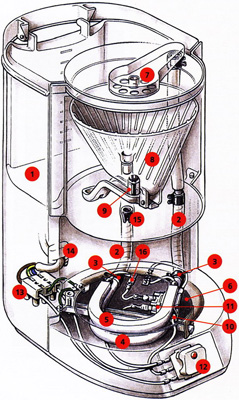
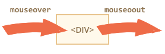
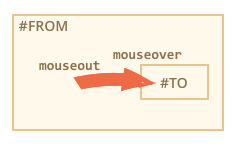

- 1. რა არის Javascript ?
-
javascript შეიქმნა იმისათვის, რომ "გაეცოცხლებინათ" ანუ უფრო დინამიური გაეხადათ HTML გვერდები.
ამ ენას თავდაპირველად ეწოდებოდა LiveScript, მაგრამ მაშინ, ისევე როგორც ახლა,
ძალიან პოპულარული ენა იყო Java და მარკეტოლოგებმა გადაწყვიტეს, რომ Java-სთან
მისმსგავსებული დასახელება უფრო პოპულარულს გახდიდა ენას. ასე წარმოიშვა სახელი javascript.
ჩაფიქრებული იყო, რომ javascript ყოფილიყო java-ს შვილობილი ენა მაგრამ მოვლენები სხვანაირად
განვითარდა, javascript დაიხვეწა, განვითარდა და ჩამოყალიბდა დამოუკიდებელ ენად, რომელსაც გაჩნია
თავისი სპეციფიკაცია - ECMAScript.
ამა თუ იმ ენაზე დაწერილი პროგრამის შესრულების ორი ვარიანტი არსებობს : კომპილაცია და ინტერპრეტაცია .-
კომპილაცია - არის პროცესი, როდესაც პროგრამის კოდი, სხვა პროგრამის სპეციალური ინსტრუმენტის -
კომპილატორის დახმარებით გადაიწერება პროცესორისათვის გასაგებ ენაში -
სამანქანო ენაში და ამის შემდეგ ხდება მისი შესრულება.
- ინტერპრეტაცია - არის პროცესი, როდესაც პროგრამის კოდი გადაეცემა ინტერპრეტატორს , რომელიც კოდში მითითებულ ინსტრუქციებს ასრულებს კოდის სამანქანო ენაზე გადათარმნის გარეშე.
-
კომპილაცია - არის პროცესი, როდესაც პროგრამის კოდი, სხვა პროგრამის სპეციალური ინსტრუმენტის -
კომპილატორის დახმარებით გადაიწერება პროცესორისათვის გასაგებ ენაში -
სამანქანო ენაში და ამის შემდეგ ხდება მისი შესრულება.
- 2. მონაცემთა ტიპები
-
სხვა ენების მსგავსად, Javascript - ის სცენარშიც მოქმედებები სრულდება გარკვეულ მონაცემებზე.
მონაცემი შეიძლება იყოს სამი სახის: ცვლადი, მუდმივა (კონსტანტა), გამოსახულება.,
კონსტანტა - ეს არის მონაცემი, რომლის მნიშვნელობაც პროგრამის მუშაობის დროს არ იცვლება.
ცვლადი - ცვლადის მნიშვნელობა, კონსტანტისაგან განსხვავებით, ცვალებადია. მის უკან მოიაზრება მეხსიერების რაღაც კონკრეტული, სახელდებული მონაკვეთი.
გამოსახულება - გამოსახულება წარმოადგენს ჩანაწერს, რომელიც შეიძლება შეიცავდეს კონსტანტებს, ცვლადებს და აგრეთვე ოპერაციებს (არითმეტიკული, ლოგიკური და ა.შ).
კონსტანტის და ცვლადის სახელებს ეწოდება იდენტიფიკატორები. ცვლადების სახელდებისას აუცილებლად უნდა იქნეს გათვალისწინებული შემდეგი მოთხოვნები:- ცვლადის სახელის პირველი სიმბოლო აუცილებლად უნდა იყოს ლათინური ანბანის დიდი ან პატარა ასო, ან ქვედა ტირე ან დოლარის ნიშანი;
- ცვლადის სახელში დაუშვებელია სასვენი ნიშნებისა და გამოტოვებული ადგილების გამოყენება;
- ცვლადის სახელი მგრძნობიარეა სიმბოლოთა რეგისტრის მიმართ;
- ცვლადის სახელში სიმბოლოთა რაოდენობა არ არის შეზღუდული.
- დაუშვებელია javascript - ის რეზერვირებული სიტყვების - მაგ: for, while და ა.შ - ცვლადის სახელებად გამოყენება.
მონაცემთა ტიპები
რიცხვითი ტიპი - მთელი (4, 250, 2017) და მცოცავმძიმიანი (45.5, 10.2, 6,8) რიცხვების ერთობლიობა. მცოცავმძიმიანი რიცხვები შეიძლება ჩაიწეროს ექსპონენციალური ფორმით, ეს ფორმა მოხერხებულია ძალიან დიდი და ძალიან პატარა რიცხვების ჩაწერისას:- 1.33e-5 = 0.0000133
- 1.33e+5 = 133000
ლოგიკური ტიპი - ამ ტიპის მონაცემმა შეიძლება მიიღოს მხოლოდ ორი მნიშვნელობა true და false ანუ ჭეშმარიტი და მცდარი. მაგალითად 3<5 ჩანაწერი ჭეშმარიტია, 5>8 ჩანაწერი მცდარი.
სტრიქონული ტიპი - ზოგიერთ პროგრამირების ენაში არის მონაცემთა სპეციალური ტიპი ერთი სიმბოლოსათვის (მაგალითად C-ში არის ტიპი char). javascript-ში არსებობს მხოლოდ ტიპი string ანუ სტრიქონული ტიპი. (უფრო დაწვრილებით ვისაუბრებთ მე-7-ე თავში)
მნიშვნელობა NULL - ამ მნიშვნელობას არანაირი კავშირი არ აქვს ზემოთ ჩამოთვლილ ტიპებთან, ეს არის ცალკე ტიპის ერთადერთი შესაძლო მნიშვნელობა, ანუ ეს არის სპეციალური მნიშვნელობა რომლის უკანაც იგულისხმება "არაფერი".
მნიშვნელობა UNDEFINED - მნიშვნელობა undefined, ისევე როგორც, null არის თავისი საკუთარი ტიპის ერთადერთი მნიშვნელობა. თუ ცვლადი გამოცხადებულია მაგრამ მასში არაფერია ჩაწერილი მაშინ ამ ცვლადის მნიშვნელობა არის UNDEFINED.
მონაცემთა ტიპის დასადგენად გამოიყენება typeof მეთოდი.var a=5;
var b="This is a string";
var c=true;
var d=null;
var e;
console.log(typeof a); // number
console.log(typeof b); // string
console.log(typeof c); // boolean
console.log(typeof d); // object
console.log(typeof e); // undefined
- 3. ოპერაციები და ოპერატორები
-
პროგრამაში ნებისმიერი ქმედება სრულდება ოპერაციების ამა თუ იმ სიმრავლის დახმარებით, ოპერაციები
ჩაწერილია გამოსახულებების საშუალებით. გამოსახულება შედგება ოპერანდებისაგან, ოპერაციის ნიშნებისაგან
და მრგვალი ფრჩხილებისაგან. მაგალითად a+b-10 გამოსახულებაში სიდიდეები a და b და კონსტანტა 10
არიან ოპერანდები, ხოლო "+" და "-" ოპერაციის ნიშნები . ოპერანდების რაოდენობიდან
გამომდინარე Javascript - ში ოპერაცია შეიძლება იყოს
- უნარული - როდესაც ოპერაციაში მხიოლოდ ერთი ოპერანდია. მაგ: -a
- ბინარული - როდესაც ოპერაციაში ორი ოპერანდია მაგ: a+b
- ტერნარული - სამი ოპერანდის კომბინაცია, პირობითი გამოსახულებები, მაგ: "? :" ჩანაწერი
- არითმეტიკული ოპერაციები
- შედარების ოპერაციები
- სტრიქონული ოპერაციები
- ლოგიკური ოპერაციები
- ბიტური ოპერაციები
- მინიჭების ოპერაციები
- შერეული ოპერაციები
ინკრემენტ და დეკრემენტ ოპერაციები
ინკრემენტ და დეკრემენტ ოპერაციები წარმოადგენენ უნარული ოპერაციების ნიმუშს პირველი უზრუნველყოფს ცვლადის მნიშვნელობის 1 - ით გაზრდას (i++ ან ++i), მეორე კი შემცირებას (i-- ან --i).
უნდა აღინიშნოს რომ i++ da ++i (ისევე როგორც i-- და --i) ტოლფასი ჩანაწერები არ არიან . ცვლადთან მიმართებაში ამ ოპერატორების (++,--) მდებარეობა განსაზღვრავს თავად ოპერაციის (გაზრდა/შემცირება) შესრულების მომენტს შემდეგი კანონზომიერების მიხედვით :- თუ ოპერაცია ჩაწერილია ოპერანდის წინ (++a ე.წ ინკრემენტის პრეფიქსული ფორმა), მაშინ გაზრდა მოხდება მიმდინარე გამოსახულების შესრულებამდე. ანუ ცვლადი ჯერ გაიზრდება/შემცირდება და ისე მიიღებს მონაწილეობას გამოსახულების შესრულებაში
- თუ ოპერაცია ჩაწერილია ოპერანდის შემდეგ (a++ ე.წ ინკრემენტის პოსტფიქსული ფორმა), მაშინ გაზრდა მოხდება მიმდინარე გამოსახულების შესრულების შემდეგ. ანუ ცვლადი გამოსახულებაში მონაწილეწობას მიიღებს გაზრდამდელი/შემცირებამდელი მნიშნელობით და შემდეგ გაიზრდება/შემცირდება
i = 1;
k = ++i;
ამ შემთხვევაში i - ც და k - ც მიიღებენ მნიშვნელობა 2 - სi = 1;
k = i++;
ამ შემთხვევაში i გახდება 2 ხოლო k 1
ინკრემენტ და დეკრემენტ ოპერაციებს პრიორიტეტი აქვთ სხვა ნებისმიერ ოპერაციებთან მიმართებაში ფაქტიურად ამა თუ იმ გამოსახულების შესრულებისას პირველ რიგში სრულდება ++/-- ისევ და ისევ იმ პირობით რომ ოპერანდის მიმართ მათ მდებარეობას აქვს გადამწყვეტი მნიშვნელობა .
i = 3;
k = i++*3;
ამ შემთხვევაში k იქნება 9 - ის ტოლიi = 3;
k = ++i*3;
ამ შემთხვევაში k იქნება 12 - ის ტოლი
შედარების ოპერაციები
ამ ოპერაციების საშუალებით ხდება სხვადასხვა ტიპის ცვლადების მნიშვნელობების შედარება. და მიიღება შედეგი true ან false. ტოლობითი ოპერაციები შირად გამოიყენება if და while ოპერატორებთან ერთად.შეიძლება შეგვხვდეს შემთხვევები, როდესაც ერთმანეთს ვადარებთ სხვადასხვა ტიპის ცვლადებს. შედარების ოპერატორიდან გამომდინარე, შესაძლოა, მოხდეს ტიპების გარდაქმნა და შემდეგ შესრულდეს შედარების ოპერაცია.- თუ ერთი ოპერანდი რიცხვითი ტიპისაა, მეორე კი - ტექსტური, მაშინ JavaScript შეეცდება ტექსტური ტიპის ოპერანდის რიცხვითში გარდაქმნას. თუ ტექსტური ტიპის ოპერანდი რიცხვითში ვერ გარდაიქმნება, მაშინ შედარების ოპერაციის შედეგი იქნება false.
- თუ ერთი ოპერანდი ბულის ტიპისაა, მეორე ოპერანდი კი ტექსტურია, JavaScript შეეცდება ორივე ოპერნადის რიცხვით ფორმატში გარდაქმნას და შემდეგ შესრულდება შედარების ოპერაცია. თუ ტექსტური ტიპის ოპერანდი ვერ გარდაიქმნა რიცხვითში, მაშინ შედარების ოპერაციის შედეგი იქნება false.
- თუ ერთი ოპერანდი რიცხვითი ტიპისაა, მეორე ოპერანდი კი ბულის ცვლადია, მაშინ JavaScript შეეცდება ბულის ტიპის ოპერანდის რიცხვით ფორმატში გარდაქმნას: true მნიშვნელობა გარდაიქმნება 1-ად, ხოლო false - 0-ად და ამის შემდეგ შესრულდება შედარების ოპერაცია.
სტრიქონული ოპერაციები
ძირითადი სტრიქონული ოპერაცია არის კონკატენაცია (ინგ. concatenation ანუ შეერთება) , ეს ოპერაცია ახდენს სტრიქონების გაერთიანებას არითმეტიკული მიმატების ნიშნის (+) საშუალებით. მაგ: "a"+"b" = "ab" ისეთი გამოსახულების შესრულების შედეგად, რომლის ერთი ოპერანდი მაინც ტექსტური ტიპისაა, მიიღება ყოველთვის ტექსტური სტრიქონი, თუმცა არსებობს გამონაკლისებიც:- თუ გამოსახულების პირველი ოპერანდი ტექსტური ტიპისაა, მაშინ ყველა დანარჩენი ოპერანდიც გარდაიქმნება ტექსტურ ფორმატში.
- თუ გამოსახულების პირველი რამდენიმე ოპერანდი რიცხვითი ტიპისაა, ხოლო დანარჩენები ტექსტურია, მაშინ ჯერ შეიკრიბება რიცხვითი ოპერანდები, ხოლო შემდეგ შეიკრიბება ტექსტურ ოპერანდთან და შედეგი მიიღება ტექსტური ტიპის.
var a="6";ტექსტური ოპერანდების შედარების ალგორითმზე ვისაუბრებთ მე-7-ე თავში.
var b=7;
var c=8;
var d;
var e;
var f;
var result;
d=a+b+c; // 678
e=b+c+a; // 156
f=c+a+b; // 867
result=d+e+f; // 678 156 867
alert(result);
ლოგიკური ოპერაციები
ლოგიკური ოპერაციებია- კონიუნქცია - ლოგიკური "და" ანუ AND (&&)
- დიზუნქცია - ლოგიკური "ან" ანუ OR (||)
- უარყოფა - ლოგიკური "უარყოფა" არა ანუ NOT (!)
პრიორიტეტების მიხედვით პირველია "!" , შემდეგ "&&" , შემდეგ "||". აგრეთვე უნდა აღინიშნოს რომ დიზუნქცია და კონიუნქცია მარცხნივასოცირებული ოპერაციებია ანუ (a && b && c) ნიშნავს (a && (b && c))მინიჭების ოპერაციები
მინიჭების ოპერაციებიც (ისევე როგორც ინკიმენტი/დეკრიმენტი) მიეკუთვნებიან უნარული ოპერაციების ტიპს.
სხვა ოპერაციები
პირობითი გამოსახულება "?:"
გამოსახულებაში მონაწილეობს 3 ოპერანდი და ამიტომ ოპერაცია არის ტერნარული. პირველი ოპერანდი ღებულობს true/false მნიშვნელობას, დანარჩენმა ორმა კი ნებისმიერი ტიპის მნიშვნელობა შეიძლება მიიღოს. თუ პირველი ოპერანდის მნიშვნელობაა true, ოპერატორი "?:" დააბრუნებს მეორე ოპერანდიდან გამოთვლილ მნიშვნელობას, თუ არადა მესამე ოპერანდიდან გამოთვლილს.
expression1 ? expression2 : expression3
ფორმულირება1 ? ფორმულირება2 : ფორმულირება3
მაგ :var x = 30;
var y = x > 25 ? x-5 : x+5;
console.log(y);
დაბრუნდება 25, იმიტომ რომ x>25 პირობა სრულდება, ე.ი y უნდა გახდეს x-5. - 4. ოპერატორი switch
-
ეს ოპერატორი შედგება გამოსახულებისაგან და ვარიანტების სიისაგან.
var test = "tring";სიტყვა გასაღები switch კითხულობს ცვლადის მნიშვნელობას, სიტყვა გასაღები case საშუალებას იძლევა განიხილოს, ჩამოითვალოს ცვლადის სავარაუდო მნიშვნელობები და აგრეთვე შესაბამისი მოქმედებები. break კი უზრულვეფოფს ციკლის დამთავრებას იმ შემთხვევაში თუ მის მშობელ case - ში მითითებული პირობა შესრულდება. default არის ალტერნატიული ქწმედება თუ არც ერთ case - ში მითითებული პირობა არ სრულდება.
switch (test){
case null:
alert ("null");
break;
case "string":
alert ("string");
break;
case "ffffff":
alert ("ffff");
break;
default: alert ("arcerti");
} - 5. ციკლის ინსტრუქციები
-
ამა თუ იმ ამოცანის გადასაჭრელად ხშირად საჭირო ხდება ერთი და იგივე გამოთვლების მრავალჯერ ჩატარება.
განმეორებად ბრძანებათა ჯგუფს ეწოდება ციკლი. javascript - ში ციკლები იწერება
შემდეგი ოპერატორების დახმარებით : while, do-while, for .
ოპერატორი While
while ციკლი არის ასე ვთქვათ წინაპირობითი, პრეპირობითი ანუ ციკლში პირობის შემოწმება/შესრულება ხდება ციკლის გამოძახებამდე , ანუ ციკლის ტანის შესრულებამდე გამოითვლება ლოგიკური პირობის მნიშვნელობა, თუ პირობა ჭერშმარიტია მაშინ ციკლიც სრულდება, ამის შემდეგ ისევ მოწმდება პირობა, ციკლი მეორდება მანამ სანამ პირობა არის true. მაგალითად განვიხილოთ რიცხვის ფაქტორიალის გამოსათვლელი სკრიპტი (4! = 1 * 2 * 3 *4 = 24)
var i = 4;while ოპერატორის გამოყენება ხელსაყრელია მაშინ, როდესაც ცნობილი არაა თუ რამდენჯერ უნდა გამეორდეს ციკლი.
var k = 1;
var faqt = 1;
while(k <= i){
faqt *= k;
k++;
}
console.log(faqt);
ოპერატორი do-while
do-while ციკლი while - საგან განსხვავეიბით არის პოსტპირობითი ანუ ციკლის გაგრძელების ლოგიკური პირობა იწერება ციკლის ტანის შემდეგ. სიტყვა გასარებ "do" - ს შემდეგ მინიმუმ ერთხელ სრულდება წიკლის ტანში აღწერილი მოქმედება და ამის შემდეგ მოწმდება ციკლის გაგრძელების პირობა, თუ იგი ჭეშმარიტია ანუ true, მაშინ ციკლი კიდევ სრულდება.var i = 4;
var k = 1;
var faqt = 1;
do{
faqt *= k;
k++;
}
while(k <= i);
console.log(faqt);
ოპერატორი for
ციკლის ეს ოპერატორი თავი თავში მოიცავს ცვლადს, ე.წ ციკლის პარამეტრს ან ციკლის მთვლელს. ციკლი იწყება სიტყვა გასარებით for შემდეგ ფრჩხილებში იწერება კონსტრუქცია, რომელიც მოიცავს ციკლის პარამეტრის ინიციალიზაციას, ლოგიკურ გამოსახულებას და ამ პარამეტრის მოდიფიკაციის ანუ ცვლილების ჩანაწერსvar faqt = 1;
for (i=1;i<=4;i++){
faqt*=i;
} console.log(faqt);
ოპერატორი for-in
ეს ოპერატორი ხელსაყრელია მასივებთან და ობიექტებთან მუშაობის დროს. მისი კონსტრუქცია ასეთია:for (variable in object) {series}variable არის ცვლადი - მასივის ელემენტი ან ობიექტის თვისება. მაგალითად გვინდა ობიექტ navigator - ის თვისებების ნახვა (ეს ობიექტი მოიცავს ბრაუზერის შესახებ ინფორმაციას) უნდა დავწეროთ ასეთი რამfor(k in navigator){
document.write(k+"="+navigator[k]);
}ციკლის შეწყვეტა
ციკლის შეწყვეტა შესაძლებელია ოპერატორ break - ის საშუალებით, რომელიც ჩართულია ციკლის ტანში. ის გამოიყენება მაშინ როდესაც ციკლის შესრულებისას დაფიქსირდება რაღაც შეცდომა ან იმშემთხვევაში როდესაც ცვლადი მიიღებს რაღაც კონკრეტულ მნიშვნელობას და აღარაა საჭირო ციკლის გაგრძელება. როგორც წესი break სრულდება რაიმე წინაპირობასთან ერთად.var i = 0;while (true) ციკლი უსასრულოა მაგრამ როდესაც i გახდება 9 - ის ტოლი ციკლი შეწყდება.
while (true){
document.write(i);
if(i == 9) break;
i++;
}ციკლის კონკრეტული იტერაციის შეწყვეტა
დავუშვათ გვინდა არა მთლიანი ციკლის შეჩერება არამედ მისი კონკრეტული იტერაციის გაუქმება. ამ შემთხვევაში გამოიყენება ოპერატორი continue, რომელიც ციკლის ტანში იწერება. მაგალითად გვინდა 1 დან 100 - მდე ისეთი ნატურალური რიცხვების ჯამის დათვლა რომლებიც უნაშთოდ იყოფა 5 - ზე.var sum = 0;
for(i=1;i<=99;i++){
if(i%5 == 0) continue;
sum+=i;
}
document.write(sum); - 6. დიალოგური ფანჯრები alert,confirm, prompt, showModalDialog
-
alert, prompt, confirm არიან გლობალური ობიექტის - "window" - ის მეთოდები .
alert არის დიალოგური ფანჯარა კონკრეტული წინადადებითა და "ok" ღილაკით, იგი ხშირად გამოიყენება იმ შემთხვევაში როცა გვსურს დავრწმუნდეთ რომ ესა თუ ის ინფორმაცია ნამდვილად მივიდა მომხმარებლამდე, იმდენად რამდენადაც მომხმარებელს "ok" ღილაკზე დაჭერამდე მიმდინარე ფანჯრის შიგთავსის ხილვის საშუალება არ ეძლევა.
confirm არის დიალოგური ფანჯარა კონკრეტული წინადადებით და "ok" და "cancel" ღილაკებით. "ok" ღილაკზე დაჭერისას აბრუნებს მნიშვნელობას true, ხოლო "cancel" - ზე დაჭერისას მნიშვნელობას false .

prompt არის დიალოგური ფანჯარა რომელიც მომხმარებელს სთავაზობს ტექსტურ ველს და "ok" და "cancel" ღილაკებს. იგი ხშირად გამოიყენება მაშინ როდესაც გვსურს რომ მომხმარებელმა აკრიფოს რაიმე ინფორმაცია გვერდზე შესვლამდე. "cancel" - ზე დაჭერისას აბრუნებს მნიშვნელობას null, ხოლო "ok" - ზე დაჭერისას იმას რაც ველში აიკრიფება.
prompt - ს შეიძლება მიეთითოს პარამეტრი რომელიც ტექსტური ველის აღწერას უზრუნველყოფს (დავუშვათ გვინდა რომ შეყვანილი ინფორმაცია 20 სიმბოლოზე მეტი არ იყოს )confirm = prompt("მიუთითეთ ელ_ფოსტა","არაუმეტეს 20 სიმბოლო");შედეგი იქნება
- 7. მუშაობა სტრიქონებთან
-
ჯავასკრიპტში ნებისმიერი ტექსტური მონაცემი ითვლება სტრიქონულ ტიპად - string, ამ ენაში არ არსებობს
ცალკე ტიპი "სიმბოლო" (მაგალითად C-ის ანალოგია char) რომელიმე ცალკეული სიმბოლოსათვის .
სტრიქონის შესაქმნელად გამოიყენება ორმაგი ან ერთმაგი ბრჭყალებიvar string = "hello world";
var string = 'hello world';
სპეციალური სიმბოლოები
სტრიქონი შეიძლება შეიცავდეს სპეციალურ სიმბოლოებს, ყველაზე ხშირად გამოიყენება ახალ ხაზზე გადასვლის სიმბოლო - "\n"alert( 'hello\nworld' ); // სიტყვა "world"-ს გამოიტანს ახალ ხაზზე
ობიექტი string, მისი მეთოდები და თვისებები
length
სტრიქონის სიგრძის გასაგებად გამოიყენება length მეთოდი.var string = "My\n"; // 3 სიმბოლო. მესამე - ახალი ხაზის სიმბოლო
alert(string.length ); // 3წვდომა სტრიქონის კონკრეტული ელემენტთან
სტრიქონში კონკრეტული სიმბოლოს საპოვნელად გამოიყენება charAt მეთოდი.var string = "hello world, this is a string";აბრუნებს პარამეტრად მითითებული რიცვის ტოლი ინდექსის შესაბამის სიმბოლოს. სიმბოლოზე წვდომისათვის შეიძლება გამოვიყენოთ კვადრატული ფრჩხილებიც.
console.log(string.charAt(6)); // wvar string = "hello world";განსხვავება ამ ორ მეთოდს შორის არის ის, რომ თუ სტრიქონი არ შეიცავს პარამეტრად მითითებული რიცხვის ტოლ ინდექსიან სიმბოლოს charAt აბრუნებს ცარიელ სტრიქონს ხოლო ფიგურული ფრჩხილები undefined-ს. უნდა აღინიშნოს, რომ str.length – ეს არის სტრიქონის , ხოლო str.charAt(pos) – სტრიქონის მეთოდებთან მიმართვა ხდება ფრჩხილების საშუალებით ხოლო თვისებებთან-ფრჩხილების გარეშე.
alert(string[1]); // eსტრიქონიდან მონაკვეთის ამოჭრა
substr(start, length)
ამოჭრას იწყებს პირველი პარამეტრის ტოლი ინდექსიდან და ჭრის იმდენ სიმბოლოს რა რიცხვიც მეორე პარამეტრად აქვს მითითებული.var string = "hello world, this is a string";
console.log(string.substr(6,5)); // worldsubstring(start, end)
ამოჭრას იწყებს პირველი პარამეტრის ტოლი ინდექსიდან და ჭრის მეორე პარამეტრად მითითებულ ინდექსა, მეორე პარამეტრის ინდექსიანი სიმბოლო არ შედის ამოჭრილ მონაკვეთშიvar string = "hello world, this is a string";თუ substring(start, end)-ის პარამეტრი start მეტია პარამეტრ end-ზე, მაშინ ამოჭრა ხდება ისე თითქოს მათ ადგილები ჰქონდეთ გაცვლილი.
console.log(string.substring(6,8)); // wo
substring-ის მსგავსი მეთოდია slice-ც, განსხვავება მათ შორის ისაა, რომ სხვადასხვაგვარად აღიქვამენ უარყოფით პარამეტრებსalert( "testme".substring(-2) ); // "testme", -2 აღიქმება როგორც 0, ანუ დასაწყისი
alert( "testme".slice(-2) ); // "me", ბოლოდან ორი პოზიციაUnicode კოდირება
როგორც ცნობილია სიმბოლოების შედარებისას ის სიმბოლოა მეტი რომელიც ანბანში უფრო ბოლოსკენ გვხვდებაA < B < C < D < E < F < .... < Zრატომ არის შემდეგი სკრიპტის შედეგი true ?alert("a" > "B"); //trueან საერთოდ, რას ნიშნავს ერთი სიმბოლო მეტია მეორეზე ? ამ საკითხებში გასარკვევად უნდა ვიცოდეთ თუ როგორ აღიქვამს ჯავასკრიპტი სიმბოლოებს: ყველა სიმბოლოს უკან იგულისხმება კოდირების სისტემა Unicode - ს რომელიღაც კოდი. Unicode ეს არის სიმბოლოების კოდირების სტანდარტი, რომელშიც წარმოდგენილია თითქმის ყველა დამწერლობის სიმბოლოები სინამდვილეშიც სიმბოლოები დარდება არა ანბანის მიხედვით, არამედ კოდების მიხედვით - ის სიმბოლოა მეტი, რომლის კოდიც მეტია, Unicode სტანდარტში კი პატარა ასოები გვხვდება დიდი ასოების შემდეგ, შესაბამისად პატარა ასოების კოდები მეტია დიდი ასოების კოდებზე, ამიტომაა "a" მეტი "B"-ზე
სტრიქონების შედარება ხდება ლექსიკოგრაფიულად, ანუ ცალ-ცალკე სიმბოლოების მიხედვით . მაგალითად s1 და s2 სტრიქონების შედარების ალგორითმი შემდეგნაირია- დარდება პირველი სიმბოლოები - s1[0] და s2[0]. თუ ისინი არ არიან ერთმანეთის ტოლნი მაშინ ის სტრიქონია მეტი, რომლის პირველი სიმბოლოც მეტია.(მიუხედავად იმისა თუ რა ხდება შემდეგ), ხოლო თუ პირველი სიმბოლოები ერთმანეთის ტოლია მაშინ ..
- დარდება მეორე სიმბოლოები s1[1] და s2[1]
- შემდეგ მესამეები Затем третьи s1[2] და s2[2] ა.შ. მანამ სანამ რომელმე სტრიქონის , რომელიმე სიმბოლო არ იქნება მეორე სტრიქონის იგივე პოზიციაზე მდგომი სიმბოლოსაგან განსხვავებული. თუ შედარებისას რომელიმე სტრიქონში ამოიწურა სიმბოლოები, მაშინ ითვლება, რომ ეს სტრიქონია ნაკლები, ხოლო თუ ერთდროულად ორივეში ამოიწურა - მაშინ სტრიქონები ტოლები არიან.
alert( "2" > "14" );თუ რომელიმე არგუმენტი არის რიცხვითი ტიპის მაშინ მეორეც გარდაიქმნება რიცხვით ტიპად
/*
true, რადგანაც აღიქმება როგორც სტრიქონები, და პირველი სიმბოლოებიდან "2" > "1"
*/alert( 2 > "14" ); // falseECMA 402-ში ჩადებულია სტრიქონების შედარების მეთოდი str1.localeCompare(str2), რომელიც აბრუნებს -1-ს თუ str1 < str2, 1-ს თუ str1 > str2 და 0-ს თუ str1 = str2 var str = "hello";
alert( str.localeCompare("world") ); // -1fromCharCode()
ობიექტ string-ს აქვს მეთოდი fromCharCode(), რომლის საშუალებითაც შეგვიძლია კოდის მიხედვით დავაბრუნოთ შესაბამისი სიმბოლოalert( String.fromCharCode(1072) ); // 'а'აგრეთვეcharCodeAt()
ამ მეთოდის მეშვეობით შესაძლებელია კონკრეტულ ინდექსზე მდგომი რომელიმე ცვლადის Unicode ნომრის წაკითხვა და ბრაუზერის ფანჯარაში გამოტანა.var string = "hello world, this is a string"; console.log(string.charCodeAt(0)); // "h" - ს Unicode 104დავწეროთ სკრიპტი, რომელიც გამოიტანს ქართული ანბანის ასოებს და მათ შესაბამის კოდებსstr = "აჰ";
var first = str.charCodeAt(0); //4304
var last = str.charCodeAt(1); //4336
for(var i=first;i<=last;i++){
document.write(String.fromCharCode(i) + " - " + i +"< br >");
}
concat
ეს ოპერატორი მნიშვნელობით იგივეა რაც "+"var string = "hello world, this is a string";
console.log(string.concat(" text")); // hello world, this is a string textindexOf
ეს ოპერატორი სტრიქონში ეძებს პარამეტრად მითითებულ პირველ შემხვედრ სიმბოლოს და აბრუნებს მის ინდექსს. თუ მითითებული სიმბოლო საერთოდ არ არის ტექსტში მაშინ აბრუნებს -1 - სvar string = "hello world, this is a string";
console.log(string.indexOf("w")); // 6lastIndexOf
ეს ოპერატორი სტრიქონში ეძებს პარამეტრად მითითებულ ბოლო შემხვედრ სიმბოლოს და აბრუნებს მის ინდექსს.var string = "hello world, this is a string";
console.log(string.lastIndexOf("l")); // 9;split
ეს ოპერატორი სტრიქონს აფორმატებს მასივად, მასივის ელემენტები კი არიან სტრიქონის ის მონაკვეთები რომლებიც სტრიქონში ერთმანეთისგან გამოიყოფიან split ოპერატორის პარამეტრად მითითებული სიმბოლოთიvar string = "hello world, this is a string";თუ ეს პარამეტრი საერთოდ არ მიეთითება მაშინ მასივის ელემენტებში მოექცევა სტრიქონის სათითაო სიმბოლოები, ანუ ერთი ელემენტი იქნება ერთი სიმბოლო.
console.log(string.split(",")); // ["hello world"," this is a string"]replace
ეს ოპერატორი სტრიქონში ეძებს პირველ პარამეტრად მითითებულ სიმბოლოს/სიტყვას და ანაცვლებს მას მეორე პარამეტრად მითითებული სიტყვით/სიმბოლოთი. თუ ეს სიტყვა სტრიქონში რამდენჯერმე მეორდება იცვლება მხოლოდ პირველი.var string = "hello world, this is a world";იმისათვის რომ ჩანაცვლებულ იქნას ყველა სიტყვა უნდა გამოვიყენოთ გლობალური მოდიფიკატორი (g).
console.log(string.replace("world","tbilisi")); // hello tbilisi, this is a worldvar string = "hello world, this is a world";თავის მხრივ ამ მეთოდსაც აქვს ალტერნატივა, მაგალითად სტრიქონში "world" სიტყვა სამჯერ მეორდება მაგრამ პირველი იწყება დიდი ასოთი : "World", ამ შემთხვევაში (g) მოდერატორის ნაცვლად უნდა გამოვიყენოთ (gi) მოდერატორი
console.log(string.replace(/world/g,"tbilisi")); // hello tbilisi, this is a tbilisivar string = "hello World , world, this is a world";ახლა გამოვიყენოთ ფუნქცია ტექსტის ჩანაცვლებისათვის
console.log(string.replace(/world/gi,"tbilisi")); // hello tbilisi, tbilisi, this is a tbilisivar str = "Mr Blue has a blue house and a blue car"; var res = str.replace(/blue|house|car/gi, function myFunction(x){return x.toUpperCase();}); // Mr BLUE has a BLUE HOUSE and a BLUE CAR.toUpperCase და toLowerCase
სტრიქონის ჩაწერა დიდ და პატარა ასოებად.alert( "hello".toUpperCase() ); // HELLO
alert( "HELLO".toLowerCase() ); // hello - 8. რეგულარული გამოსახულებები
-
რეგულარული გამოსახულებები ანუ იგივე Regular Expressions
რეგულარული გამოსახულება არის სიმბოლოთა თანმიმდევრობა რომელიც ახდენს სტრიქონში ამა თუ იმ სიმბოლოს ძებნისა ან ჩანაცვლების შაბლონის ფორმირებას. ჯავასკრიპტში რეგულარული გამოსახულებები რეალიზებულია ცალკე ობიექტში RegExp. რეგულარული გამოსახულების შედგენის სინტაქსი ასეთია:var regexp = new RegExp("შაბლონი", "დროშა");როგორც წესი გამოიყენება უფრო მოკლე ჩანაწერი :var regexp = /შაბლონი/; // დროშის გარეშეუმარტივეს შემთხვევაში, თუ დროშები და სპეციალური სიმბოლოები არ გვაქვს, შაბლონის მიხედვით ძებნა ეს იგივე რაც ჩვეულებრივი ძებნა სტრიქონში:
var regexp = /შაბლონი/gmi; // gmi დროშებით (შევისწავლით ქვემოთ)var str = "მე მიყვარს ჯავასკრიპტი!"; // უნდა მოიძებნოს ამ სტრიქონშიშევადაროთ ჩვეულებრივ ძებნას :
var regexp = /მი/;
alert( str.search(regexp) ); // 3var str = "მე მიყვარს ჯავასკრიპტი!";როგორც ვხედავთ, ერთი და იგივეა, უბრალოდ რეგულარული გამოსახულება იყენებს მეთოდს search, ჩვეულებრივი ძებნა კი იყენებს მეთოდ – indexOf-ს.
var substr = "მე";
alert( str.indexOf(substr) ); // 2
დროშები
რეგულარულ გამოსახულებას შეიძლება გააჩნდეს ე.წ დროშები რომლებიც ზეგავლენას ახდენენ ძებნის შედეგებზე. დროშა შეიძლება შეგვხვდეს სამი სახის :- i - ძებნა მიმდინარეობს რეგისტრის უგულებელყოფით, ანუ ერთნაირად აღიქმება А და а (case-nsensitive).
- g - თუ ეს დროშა მითითებულია იძებნება/ნაცვლდება ყველა დამთხვევა, წინააღმდეგ შემთხვევაში მხოლოდ პირველი (lobal match).
- m - მრავალხაზიანი ძებნა
var str = "I Love JavaScript!";ყოველივე ზემოთ თქმული რომ შევაჯამოთ მივიღებთ ასეთ რამეს:
alert( str.search( /LO/ ) ); // -1
alert( str.search( /LO/i ) ); // 2
- რეგულარული გამოსახულება შედგება შაბლონისაგან და არააუცილებელი დროშებისაგან g, i და m.
- მეთოდი str.search(regexp) აბრუნებს ინდექსს, რომელზედაც დგას შესაბამისი დამთხვევა.
str.search(reg)
ეს მეთოდი ზემოთ უკვე შეგვხვდა. ის აბრუნებს პირველი დამთხვევის პოზიციას ან -1-ს თუ დამთხვევა არ დაფიქსირდება.var str = "ეს ჯავასკრიპტია, ეს კარგი ენაა";search მეთოდის შეზღუდვაც სწორედ ესაა – ის მხოლდ პირველ დამთხვევას ეძებს.
alert( str.search( /ეს/i ) ); // 0r.match(reg) g დროშის გარეშე
მეთოდი str.match მუშაობს სხვადასხვაგვარად, იმისდამიხედვით მივუთითებთ თუ არა დროშა g-ს. ჯერ განვიხილოთ შემთხვევა, როცა ის მითითებული არ არის. ამ შემთხვევაში str.match(reg) მხოლოდ პირველ დამთხვევას. ძებნის შედეგი - ეს არის მასივი, რომელშიც მოთავსებულია ეს დამთხვევა და რომელსაც აქვს დამატებითი თვისებები : index - პოზიცია, რომელზეც მოხდა დამთხვევა და input – ანუ სტრიქონი რომელშიც მიმდინარეობდა ძებნა.var str = "GE-Ge-ge";ამ მასივს ყოველთვის ერთი ელემენტი არ აქვს. თუ შაბლონის ნაწილი მოთავსებულია ფრჩხილებში, მაშინ ეს ნაწილი ხდება მასივის ცალკე ეწლემენტი
var result = str.match( /ge/i );
alert( result[0] ); // ge (დამთხვევა)
alert( result.index ); // 0 (პოზიცია)
alert( result.input ); // GE-Ge-ge (მთლიანი სტრიქონი)
var str = "javascript - წარმატებისათვის";
var result = str.match( /JAVA(SCRIPT)/i );
alert( result[0] ); // javascript (მთლიანი დამთხვევა)
alert( result[1] ); // script (დამთხვევის ფრჩხილებში მოთავსებული ნაწილი)
alert( result.index ); // 0
alert( result.input ); // javascript - წარმატებისათვისr.match(reg) g დროშასთან ერთად
დროშა g-სთან ერთად, match აბრუნებს ყველა დამთხვევისაგან შემდგარ მასივს.var str = "GE-Ge-ge";იმ შემთხვევაში თუ დამთხვევა არ დაფიქსირდება , match აბრუნებს null-ს
var result = str.match( /ge/ig );
alert( result ); // GE-Ge-ge
კლასები
განსაზღვრული იერსახის სიმბოლოების საძებნელად რეგულარულ გამოსახულებებში განხილულია «სიმბოლოთა კლასები». სიმბოლოთა კლასი – ეს არის სპეციალური აღნიშნვა, რომელშიც მოთავსებულია ნებისმიერი სიმბოლო, სიმბოლოთა კონკრეტული ნაკრებიდან. .
მაგალითად კლასი «ნებისმიერი ციფრი». ის აღინიშნება ასე : \d. შემდეგ ეს აღნიშნვა ჯდება შაბლონში და ამგვარად ძებნაში ხვდება ნებისმიერი ციფრი.var str = "+995 571-17-33-11";რომ არ მიგვეთითებინა დროშა g, დაბრუნდებოდა მხოლოდ ციფრი 9.
var reg = /\d/g;
alert( str.match(reg) ); // ყველა დამთხვევის მასივი: 9,9,5,5,7,1,1,7,3,3,1,1
კლასები \d \s და \w
- \d (ინგლისური სიტყვის «digit» – «ციფრი» პირველი ასო) - ციფრები, სიმბოლოები 0-დან 9-ის ჩათვლით
- \s (ინგლისური სიტყვის «space» – «ცარიელი ადგილი» პირველი ასო) - ცარიელი სიმბოლოები, ტაბი, ხაზის გადატანა და ა.შ.
- \w (ინგლისური სიტყვის «word» – «სიტყვა» პირველი ასო) - ლათინური ანბანის ასო ან ციფრი ან ქვედა ტირე '_'. არალათინური ასოები არ შედის \w კლასში.
ნაკრები და დიაპაზონი [...]
თუ რეგულარულ გამოსახულებაში რამოდენიმე სიმბოლო ან სიმბოლოთა კლასი მოქცეულია კვადრატულ ფრჩხილებში[…], ეს ნიშნავს რომ უნდა მოიძებნოს მითითებულ დიაპაზონში მოქცეული ნებისმიერი სიმბოლო.ნაკრები
მაგალითად [еао] აღნიშნავს ამ სამი სიმბოლოდან ნებისმიერს: 'а', 'е', ან 'о'. ასეთ აღნიშნვას ეწოდება ნაკრები.// ვიპოვოთ [г или т], და შემდეგ "оп"
alert( "Гоп-стоп".match(/[гт]оп/gi) ); // "Гоп", "топ"დიაპაზონი
დიაპაზონებია მაგალითად: [a-z] – სიმბოლოები a-დან z-ის ჩათვლით, [0-5] – ციფრები 0-დან 5-ის ჩათვლით. მოვძებნოთ დამთხვევა სადაც სიმბოლო "x"-ის შემდეგ მოდის ორჯერ ზედიზედ ან ნებისმიერი ციფრი ან ასოები A-დან F-მდე:// მოძებნის "xAF" - ს
alert( "Exception 0xAF".match(/x[0-9A-F][0-9A-F]/g) );დიაპაზონი «გარდა»
ჩვეულებრივი დიაპაზონების გარდა არსებობს გამონაკლისითი დიაპაზონები [^…]. [^…] ამ დიაპაზონში მოქცეულია ნებისმიერი სიმბოლო გარდა მითითებულებისა. მაგალითად:- [^аеуо] – ნებისმიერი სიმბოლო გარდა 'a', 'e', 'y', 'o'.
- [^0-9] – ნებისმიერი სიმბოლო გარდა ციფრებისა ანუ იგივე \D.
- [^\s] – ნებისმიერიარაცარიელი სიმბოლო ანუ იგივე \S.
alert( "alice15@gmail.com".match(/[^\d\sA-Z]/gi) ); // "@", "." - 9. მუშაობა რიცხვებთან, მათემატიკური ოპერაციები
-
ჯავასკრიპტში, როგორც მთელი, ასევე ათწილადი რიცხვები ეკუთვნიან Number
ტიპს და ინახებიან IEEE-754 - ის 64 ბიტიან ფორმატში. IEEE იშიფრება, როგორც Institute of
Electrical and Electronics Engineers და ნიშნავს ელექტრონიკის ინჟინერთა და ელექტრონიკის
ინსტიტუტს, ხოლო IEEE-754 არის ამ ინსტიტუტში მიღებული, მცოცავმძიმიანი არითმეტიკის სტანდარტი.
ნოლზე გაყოფა, Infinity
დავსვათ კითხვა : რა შეიძლება მოხდეს 0-ზე გაყოფისას ? როგორც წესი - შეცდომა პროგრამაში, ყოველ შემთხვევაში ეს ასეა პროგრამირების ენების უმრავლესობაში მაგრამ არა javascript-ში. როგორც ცნობილია რაც უფრო ნაკლებია გამყოფის მნიშვნელობა მით უფრო დიდია განაყოფი. ძალიან, ძალიან მცირე რიცხვზე გაყოფისას შედეგი იქნება ძალიან ძალიან დიდი. ამ ლოგიკიდან გამომდინარე javascript-ში 0-ზე გაყოფისას მიიღება უსასრულობა ანუ +Infinity (-Infinity ანუ მინუს უსასრულობა. finite ნიშნავს სასრულს, ხოლო "In" არის უარყოფის წინსართი). Infinity არის განსაკუთრებული რიცხვითი მნიშვნელობა, რომელიც თავის თავში გულისხმობს უსასრულობას- Infinity არის ყველა რიცხვზე მეტი
- უსასრულობაზე დამატება არ ცვლის მას
alert( Infinity > 1234567890 ); // true
alert( Infinity + 5 == Infinity ); // trueNaN
თუ ვერ ხერხდება მათემატიკური ოპერაციის შესრულება მაშინ მიიღება მნიშვნელობა NaN (Not-A-Number).ეს მნიშვნელობა გამოიყენება მათემატიკური შეცდომების "მოსანიშნად" და ახასიათებს შემდეგი თავისებურებები:-
არ უდრის არაფერს თავის თავის ჩათვლით (?!), აი ეს კოდი არაფერს გამოიტანს
if (NaN == NaN) alert( "==" ); // არცერთი გამოძახება
if (NaN === NaN) alert( "===" ); // არ იმუშავებს -
მნიშვნელობა NaN შეიძლება შემოწმდეს სპეციალური ფუნქციით isNaN(n),
რომელიც შეეცდება არგუმენტი გარდაქმნას რიცხვად და აბრუნებს true-ს თუ ეს არ გამოვიდა,
ყველა სხვა შემთხვევაში აბრუნებს false-ს
var n = 0 / 0;
alert( isNaN(n) ); // true
alert( isNaN("12") ); // false, სტრიქონი "12" გარდაიქმნა ჩვეულებრივ რიცხად 12
-
NaN-თან ნებისმიერი ოპერაციის შემდეგ ბრუნდება NaN.
alert( NaN + 1 ); // NaN
isFinite(n)
როგორც ვნახეთ ჯავასკრიპტში გარდა "ჩვეულებრივი" რიცხვებისა არის სპეციალური მნიშვნელობები NaN/+Infinity/-Infinity. იმისათვის რათა ეს "ჩვეულებრივი" რიცხვები განვასხვავოთ ამ სპეციალური მნიშვნელობებისაგან, გამოიყენება ფუნქცია isFinite. (პირდაპირი მნიშვნელობით "არის სასრული ?") ფუნქცია isFinite(n) გარდაქმნის არგუმენტს რიცხვად და აბრუნებს true, თუ შედეგი არ არის NaN/Infinity/-Infinity ამათგან ერთ-ერთი.alert( isFinite(1) ); // true
alert( isFinite(Infinity) ); // false
alert( isFinite(NaN) ); // false
alert( isFinite("გჰფგჰფგფგჰ") ); // false
რიცხვად გარდაქმნა
მათემატიკური ფუნქციებისა და არითმეტიკული ოპერაციების უმრავლესობა, ამა თუ იმ ტიპის მონაცემს ავტომატურად გარდაქმნის რიცხვად. მაგალითადvar s = "12.34";ამასთანავე თუ სტრიქონი არ გარდაიქმნება რიცხვად შედეგი იქნება Nan.
alert( +s ); // 12.34alert( +"12test" ); // NaNერთადერთი გამონაკლისი არის სტრიქონში შემავალი ცარიელი სიმბოლოები, რომელთა იგნორირებაც ხდება რიცხვით ფორმატში გადაყვანისასalert( +" -12" ); // -12
alert( +" \n34 \n" ); // 34, ხაზის გადატანა \n ითვლება ცარიელ სიმბოლოდ
alert( +"" ); // 0, ცარიელი სტრიქონი გარდაიქმნება 0-ად
alert( +"1 2" ); // NaN, ცარიელი სიმბოლო რიცხვის შიგნით - შეცდომა
parseInt(), parseFloat()
HTML/CSS-ის სამყაროში მონაცემები ყოველთვის არ არის მკაფიოდ და აშკარად რიცხვითი ტიპის (მაგ: 12px). ამ მნიშვნელობისათვის "+" ოპერატორი, როგორც ზემოთ ვნახეთ დააბრუნებს NaN-ს. ასეთ შემთხვევებში გამოიყენება ფუნქციები parseInt() და parseFloat().- parseInt() - ტექსტის გარდაქმნა მთელ რიცხვად
- parseFloat() - ტექსტის გარდაქმნა მცოცავმძიმიან რიცხვად
alert( parseInt('12px') ); // 12ფუნქცია parseInt და მისი ანალოგი parseFloat სტრიქონს გარდაქმნიან რიცხვად ნაბიჯ-ნაბიჯ ცალ-ცალკე სიომბოლოების მიხედვით, მანამ არ დაფიქსირდება შეცსომა.alert( parseInt('12px') ) // 12, შეცდომა სიმბოლო 'p' - ზე alert( parseFloat('12.3.4') ) // 12.3, შეცდომა მეორე წერტილზერა თქმა უნდა არის შემთხვევები, როდესაც ეს ფუნქციებიც აბრუნებენ მნიშვნელობა NaN-ს.თუ parseInt() და parseFloat() ფუნქციების არგუმენტები არ იწყება რიცხვით მაშინ ისინი აბრუნებენ მნიშვნელობას NaN, რადგან რიცხვის ძებნა იწყება არგუმენტის დასაწყისიდანვე დანარჩენი ნაწილი კი უგულებელყოფილია.
parseInt("12 საათია"); // 12
parseInt("ახლა არის 12 საათი") // NaN
parseFloat("0.5 ლიტრი ლუდი") // 0.5
parseFloat("მომეცით 0.5 ლიტრი ლუდი") // NaN
მათემატიკური ოპერაციები
მათემატიკური ოპერაციებისათვის javascript - ში გამოიყენება ობიექტი Math, განვიხილოთ მისი მეთოდები.console.log(Math.abs(-5)); // 5 აბსოლიტური მნიშვნელობა ანუ მოდული
console.log(Math.ceil(5.2)); // 6 რიცხვის დამრგვალება მარჯვნიდან უახლოაეს მთელ რიცხვამდე მიუხედავად ათწილადისა
console.log(Math.floor(5.9)); // 5 რიცხვის დამრგვალება მარცხნიდან უახლოაეს მთელ რიცხვამდე მიუხედავად ათწილადისა
console.log(Math.round(6.2)); // 6 ჩვეულებრივი დამრგვალება
console.log(Math.PI); // 3.141592653589793
console.log(Math.max(3,78,35,1)); // მაქსიმუმი
console.log(Math.min(3,78,35,1)); // მინიმუმი
console.log(Math.pow(3,3)); // 27 ახარისხება
console.log(Math.random()); // შემთხვევითი რიცხვი [0-1] შუალედიდან
console.log(Math.sqrt(16)); // 4 ფესვი
დამრგვალება მითითებულ სიზუსტემდე
როგორც ცნობილია, მათემატიკაში არსებობს ასეთი ტერმინები "მეათედების სიზუსტემდე დამრგვალება", "მეასედების სიზუსტემდე დამრგვალება" და ა.შ. ათწილადის მძიმის მარჯვნივ სასურველ თანრიგამდე დამრგვალებისათვის ეს ათწილადი უნდა გავამრავლოთ 10-ის იმ ხარისხზე, მძიმის მარჯვნივ რამდენი ერთეულის სიზუსტითაც ვამრგვალებთ, შემდეგ მიღებული შედეგი დავამრგვალოთ Math.round()-ით და ბოლოს ეს შედეგი გავამნრავლოთ 10-ის იმავე ხარისხზე. მაგ: მუდმივა PI = 3.1415926.. დავამრგვალოთ მეასედების სიზუსტემდეvar PI = 3.1415926;
alert( Math.round(PI * 100) / 100 ); // 3.1415926 -> 314.15926 -> 314 -> 3.14
num.toFixed(precision)
ეს მეთოდი ამრგვალებს რიცხვს მითითებულ სიზუსტემდე (precision ნიშნავს სიზუსტეს) და აბრუნებს შედეგს სტრიქონის სახით. დამრგვალება ხდება უახლოეს მთელ რიცხვამდე Math.round()-ის მსგავსად. (უნდა აღინიშნოს, რომ ამ მეთოდსაც აქვს თავისი უხერხული მხარეები რიცხვების ორობით სისტემაში გადაყვანისას, ამ უზუსტობებზე ქვემოთ ვისაუბრებთ)var PI = 3.1415926;თუ შედეგი აუცილებლად რიცხვითი ტიპისა გვინდა, რომ უყოს მაშინ, როგორც ზემოთ ვნახეთ, დაგვეხმარება არითმეტიკული ოპერაციის ნიშანი "+"
alert(PI.toFixed(2)); // 3.14
alert(typeof PI.toFixed(2)); // string
var PI = 3.1415926;
alert(PI.toFixed(2)); // 3.14
alert(typeof +(PI.toFixed(2))); // number
არაზუსტი გამოთვლები (!!!)
გავუშვათ ასეთი სკრიპტი :alert( 0.1 + 0.2 == 0.3 ); // falseშედეგები მართლაც უცნაურია... საქმე იმაშია, რომ როდესაც ჯავასკრიპტი ახდენს გამოთვლებს, იგი რიცხვებს გარდაქმნის ორობით სისტემაში და სწორედ აქ ჩნდება პრობლემა - 0.1 არ ფორმატდება ორობით სისტემაში აბსოლიტური სიზუსტით რადგან ორობით სისტემაში 1-ის 10-ზე გაყოფით მიიღება უსასრულო პეიოდი.
alert( 0.1 + 0.2 ); // 0.30000000000000004
ეს რა თქმა უნდა არ ნიშნავს იმას, რომ ასეთ რიცხვებზე ზუსტი ართმეტიკული ოპერაციების ჩატარება არ შეიძლება. ზუსტი გამოთვლების ჩასატარებლად არსებობს ორი ვარიანტი:alert( (0.1 * 10 + 0.2 * 10) / 10 ); // 0.3ანvar result = 0.1 + 0.2;უნდა აღინიშნოს, რომ სიზუსტესთან მიმართებაში ანალოგიურად ვითარდება მოვლენები პროგრამირების ყველა ენაში, რომლებიც იყენებენ IEEE 754-ს (C, PHP, Ruby, Perl)
alert( +result.toFixed(10) ); // 0.3 - 10. მასივები
-
მასივი არის ცვლადის ტიპი რომელშიც შეიძლება შეინახოს რამოდენიმე მნიშვნელობა ერთდროულად. სხვა
სიტყვებით მასივი ეს არის მონაცემთა ჩაწერის ტიპი რომელიც შედგება მონაცემთა დანომრილი ფრაგმენტებისაგან.
ამ ფრაგმენტებს ეწოდება მასივის ელემენტები ხოლო ფრაგმენტების ნომრებს ამ ფრაგმენტების ინდექსები .
მასივი აგრეთვე შეიძლება განვიხილოთ, როგორც მნიშვნელობათა მოწესრიგებული ნაკრები.
javascript - ში მასივის ელემენტები შეიძლება შეიცავდნენ სხვადასხვა ტიპის მონაცემებს, მაგ: ერთი შეიძლება იყოს მთელი, მეორე ათწილადი და ა.შ. აგრეთვე მასივებს ახასიათებთ დინამიურობა ანუ შეგვიძლია წავშალოთ რომელიმე ელემენტი ან პირიქით დავამატოთ. მასივის ინდექსაცია იწყება 0 - დან. თუ მასივში არის ვთქვათ 5 ელემენტი ამბობენ რომ მასივის სიგრძე არის 5. განვიხილოთ მასივის შექმნის ვარიანტები:var array1 = [1,,2,5.6,"hello","world",true];მასივის სიგრძის გამოსათვლელად გამოიყენება length სიტყვა გასაღები :console.log(array1.length);როგორც ვხედავთ ამ მასივში სხვადასხვა ტიპის ინფორმაციაა შენახული. ელემენტებთან წვდომა ხდება შემდეგნაირად: მაგალითად დავაბრუნოთ მე-3-ე ელემენტი : array1['2']; როგორც ვხედავთ მასივის მეორე ელემენტი ცარიელია, თუ მას დავაბრუნებთ მივიღებთ მნიშვნელობას undefined.
მასივი შეიძლება შეიქმნას ასეც :var array1 = new Array[1,,2,5.6,"hello","world",true];ამ ჩანაწერით ჩვენ გამოვიძახეთ ობიექტი Array - ს მეთოდი კონსტრუქტორი .ასოციაციური მასივები
მასივის ინდექსი შეიძლება იყოს არამარტო ციფრი, არამედ მაგალითად სტრიქონული ტიპისაც. სახელდებული ინდექსების შემცველ მასივს ეწოდება ასოციაციური მასივი. ასოციაციური მასივი არის მონაცემთა სტრუქტურა, რომელშიც შეიძლება შევინახოთ ნებისმიერი ინფორმაცია გასაღები-მნიშვნელობა ფორმატში. ის შეიძლება შევადაროთ კარადას წარწერებიანი უჯრებით, მონაცემები ინახება ამ უჯრებში, დასახელების მიხედვით ადვილად ვპოულობთ საჭირო უჯრას და ვიღებთ იქიდან ინფორმაციას.
javascript - ში ასეთი მასივები არ გამოიყენება ! javascript მათ აღიქვამს როგორც ობიექტებს, რის შემდეგაც მასივის ყველა ფუნქცია და მეთოდი არასწორ მნიშვნელობას დააბრუნებს. მასივი არის ობიექტის ასე ვთქვათ ერთ-ერთი "სახეობა" , განსხვავება ობიექტსა და მასივს შორის არის ის რომ ობიექტში გვაქვს სახელდებული ინდექსები მასივში კი ნუმერირებული. როდის გამოვიყენოთ მასივი და როდის ობიექტი ? იმის გათვალისწინებით რომ javascript ასოციაციურ მასივებს არ უჭერს მხარს, ობიექტები უნდა გამოვიყენოთ მაშინ როდესაც ელემენტების ინდექსები გვინდა რომ იყოს ტექსტური ტიპისანი, ხოლო თუ გვინდა რომ იყოს რიცხვითი ტიპისები მაშინ უნდა გამოვიყენოთ მასივი.მასივის "დათვალიერება" , for in ინსტრუქცია
დავუშვათ გვინდა მასივის ელემენტების მნიშვნელობებისა და ამ ელემენტების ინდექსების ნახვა. ამისათვის გამოიყენება for in ინსტრუქციაvar array1 = [1,2,5.6,"hello","world",true];
for(var index in array1){
console.log("ინდექსი - " + index + " მნიშვნელობა " + array1[index]);
}მასივის მეთოდები
Array.join()
მასივის ელემენტების სტრიქონულ ტიპად ჩაწერა, იმ შემთხვევაში თუ join - ს პარამეტრად არაფერს მივუთიტებთ, ელემენტები ერთმანეთისგან გამოიყოფიან მძიმით.var array1 = [1,2,5.6,"hello","world",true];ხოლო თუ მივუთითებთ მაშინ ელემენტები გამოიყოფა მითითებული სიმბოლოთი:
document.write(array1.join()); // შედეგი : 1,2,5.6,hello,world,truevar array1 = [1,2,5.6,"hello","world",true];
document.write(array1.join("|")); // შედეგი : 1|2|5.6|hello|world|trueArray.reverse()
მასივს ალაგებს უკუთანმიმდევრობით (ახალ მასივს არ ქმნის):var array1 = [1,2,5.6,"hello","world",true];
document.write(array1.reverse()); // შედეგი : true,world,hello,5.6,2,1Array.sort()
მასივის ელემენტების ანბანის მიხედვით დალაგება (ახალ მასივს არ ქმნის). ციფრებსაც განიხილავს როგორც სტრიქონებსvar array1 = [100,111,22,222,5,"hello","world",true];
document.write(array1.sort()); // შედეგი : 100,111,22,222,5,hello,true,worldArray.concat()
მასივს ამატებს ელემენტებს ბოლოში.var array1 = [100,111,22,222,5,"hello","world",true];
document.write(array1.concat("false","javascript")); // შედეგი : 100,111,22,222,5,hello,world,true,false,javascriptArray.slice()
მასივის ფრაგმენტის ამოღება, გადაეცემა ორი პარამეტრი: პირველი პარამეტრის მნიშვნელობის ინდექსიდან იწყებს ამოჭრას და მეორე პარამეტრის წინა ელემენტით ასრულებს, ანუ მეორე პარამეტრის ინდექსიანი ელემენტი არ შედის ამოჭრილ მასივში. თუ მხოლოდ ერთ პარამეტრს მივუთითებთ მაშინ ამოჭრის ამ პარამეტრიდან მასივის ბოლომდე. თუ უარყოფით მნიშვნელობებს მივუთითებთ პარამეტრად მაშინ ბოლოდან ამოჭრის .var array1 = ["a","b","c","d","e","f"];
document.write(array1.slice(2,4)); // შედეგი : c,d
document.write(array1.slice(2)); // შედეგი : c,d,e,f
document.write(array1.slice(-2)); // შედეგი : e,f
document.write(array1.slice(-3,-2)); // შედეგი : d
Array.splice()
მასაც ეთითება მინიმუმ ორი ელემენტი. პირველი უჩვენებს თუ მასივის რომელი ელემენტიდან დაიწყოს ამოჭრა, ხოლო მეორე უჩვენებს საწყისი ელემენტიდან რამდენი შემდეგი ელემენტი უნდა ამოიჭრას. ამის შემდეგ კი ქმნის ახალ მასივს რომელშიც თავსდება ამოჭრილი ელემენტები.var array1 = ["a","b","c","d","e","f"];splice - ს კიდევ შეიძლება მიეთითოს სხვა პარამეტრებიც, რომლებიც ამოჭრილი ელემენტების ნაცვლად ჩაჯდება საწყის მასივში.
array1.splice(2,2);
document.write(array1); // შედეგი : a,b,e,f
განსხვავება slice - სა და splice - ს შორის ის არის, slice ქმნის ახალ მასივს და ძველი იგივე რჩება, ხოლო splice ახალ მასივსაც აბრუნებს და ამავე დროს პირველი მასივიც იცვლება ასე ვთქვათ "მუტაციას" განიცდის და მისგან იჭრება მითითებული ელემენტები.Array.push()
ახალი ელემენტების დამატება მასივის ბოლოში (ეს და ამის შემდეგ განხილული მეთოდებიც ცვლიან საწყის მასივს !!!) აბრუნებს ახალი მასივის სიგრძესvar array1 = ["a","b","c","d","e","f"];
array1.push(1,2,3);
document.write(array1); // შედეგი : a,b,c,d,e,f,1,2,3
Array.pop()
მასივის ბოლო ელემენტის წაშლა (აბრუნებს წაშლილ ელემენტს)var array1 = ["a","b","c","d","e","f"];ზუსტად ანალოგიური ფუნქციები მასივის დასაწყისთან მუშაობისათვის არის Array.unshift() და Array.shift(), პირველი ამატებს ელემენტებს და აბრუნებს ახალი მასივის სიგრძეს, მეორე შლის პირველ ელემენტს და აბრუნებს წაშლილ ელემენტს მასივის კონკრეტული ელემენტის მნიშვნელობის წასაშლელად გამოიყენება delete
array1.pop();
document.write(array1); // შედეგი : a,b,c,d,e
var array1 = ["a","b","c","d","e","f"];ანუ თავად ელემენტი არ იშლება უბრალოდ მისი მნიშვნელობა ხდება undefinedაქედან გამომდინარე არ იცვლება არც მასივის სიგრძე.
delete.array1[2]
document.write(array1); // შედეგი : a,b,,d,e,f,1,2
document.write(array1[2]); // შედეგი : undefinedArray.isArray()
იმის გასაგებად ცვლადში მოქცეულია თუ არა მასივი გამოიყენება Array.isArray().var array1 = ["a","b","c","d","e","f"];
var is = Array.isArray(array1);
console.log(is); // შედეგი true
var age = 15;Array.isArray() - ს რეალიზაცია მოხდა ES5 - ში.
var is = Array.isArray(age);
console.log(is); // შედეგი false
ECMAScript ანუ იგივე ES არის ....
მრავალგანზომილებიანი მასივები
როგორც ცნობილია javascript - ში მასივის ელემენტი შეიძლება იყოს ნებისმიერი ტიპის, მათ შორის შეიძლება იყოს ობიექტიც და აგრეთვე მასივიც. მრავლგანზომილებიანი მასივი ეს არის მასივი მასივში ასრთი მასივის ელემენტებთან წვდომისათვის გამოიყენება ორმაგი "[][]", მაგალითად array[i][j]. - 11. ფუნქციები
-
ფუნქცია ეს არის პროგრამის სახელდებული ფრაგმენტი, სხვადასხვა ინსტრუქციების ერთობლიობა. რომლის
განსაზღვრაც ხდება ერთხელ მაგრამ გამოძახება შეიძლება მრავალჯერ. ფუნქციის შექმნა ხდება შემდეგნაირად:
function myFoo(){ფუნქციაში შეიძლება გამოყენებულ იქნას ლოკალური ცვლადები. ფუნქციაში აღწერილ ცვლადს ეწოდება ლოკალური ცვლადი. ლოკალურ ცვლადებთან წვდომა შეიძლება მხოლოდ ფუნქციის შიგნით
// script
}
myFoo(); // ფუნქციის გამოძახება, myFoo არის ფუნქციის სახელი ანუ იდენთიფიკატორი.function showMessage() {ფუნქციაში შეიძლება გამოყენებულ იქნას გარე ცვლადები, ანუ ფუნქციის გარეთ აღწერილი ცვლადები
var message = 'Hello !'; // ლოკალური ცვლადი
alert( message );
}
showMessage(); // 'Hello !'
alert( message ); // დაფიქცირდება შეცდომა , რადგან ცვლადი მხოლოდ ფუნქციაში "ჩანს"var city = 'Tbilisi';ფუნქციაში შესაძლებელია გარე ცვლადის არა მარტო წაკითხვა,არამედ მნიშვნელობის შეცვალაც
function showMessage() {
var message = 'Hello ' + city;
alert(message);
}
showMessage(); // Hello Tbilisivar city = 'Tbilisi';მთლიანი სკრიპტის დონეზე აღწერილ ფუნქციას ეწოდება გლობალური ცვლადი. ზემოთ მოყვანილ მაგალითში ცვლადი city არის გლობალური.
function showMessage() {
city = 'Rustavi'; // მოხდა გარე ცვლადზე ახალი მნიშვნელობის მინიჭება
var message = 'Hello ' + city;
alert( message );
}
showMessage();
alert( city ); // Rustaviფუნქციის პარამეტრები
გამოძახებისა ფუნქციას შეიძლება გადაეცეს მონაცემები, რომლებსაც შემდეგ იგი გამოიყენებს.function showMessage(from, text) { // პარამეტრები from, textპარამეტრები კოპირდება ფუნქციაში აღწერილ ლოკალურ ცვლადებში
from = "** " + from + " **";
alert(from + ': ' + text);
}
showMessage('Zoro', 'Hello !');
showMessage('Zoro', 'How are you ?');
ფუნქციის პარამეტრების ანუ არგუმენტების მითითება შესაძლებელია არა მხოლოდ ფრჩხილებში როგორც ეს მოყვანილ შემთხვევაშია არამედ თავად ფუნქციის ტანშიც სიტყვა გასაღებ arguments დახმარებით. ეს არიც ცვლადი რომელიც თავის თავში მოიცავს ერთგვარ მასივს, ამ მასივის ელემენტები კი წარმოადგენენ ფუნქციის არგუმენტებს.
function myfoo()
{
var array = arguments;
for (i=0;i<=array.length;i++)
{
console.log(array[i]);
}
}
myfoo("hello","how","are","you"); // arguments[0] = hello, arguments[1] = how ...
ინსტრუქცია return
ხშირ შემთხვევაში საჭიროა ფუნქციამ დააბრუნოს რაიმე მნიშვნელობა და ეს მნიშვნელობა გადაეცეს კოდს, რომლიდანაც მოხდა ამ ფუნქციის გამოძახება. მნიშვნელობის დასაბრუნებლად გამოიყენება დირექტივა return. ის შეიძლება განთავსდეს ნებისმიერ ადგილას ფუნქციაში. როდესაც javascript-ის ინტერპრეტატორი ხვდება ინსტრუქცია return - ს, ის წყვეტს ფუნქციის მუშაობას და აბრუნებს იმ შედეგს , რომელიც return - ის გამოძახების მომენტში აქვს ფუნქციას. მუშაობის გაგრძელება არ ხდება არც მაშინ თუ return-ის შემდეგ კიდევ სხვა ოპერატორებიცაა. მაგალითად გვინდა მართკუთხედის ფართობის დათვლა :function fartobi(a,b)იმ შემთხვევაში თუ ფუნქციამ არ დააბრუნა მნიშვნელობა, ან return მითითებულია პარამეტრის გარეშე ითვლება, რომ ფუნქციამ დააბრუნა undefined.
{
c = a*b;
return c;
}
console.log(fartobi(2,5)); // შედეგი იქნება 10function doNothing() { /* ცარიელი */ }
alert( doNothing() ); // undefined
function doNothing() {
return;
}
alert( doNothing() === undefined ); // true
რეკურსია
რეკურსია არის მოვლენა, როდესაც რომელიმე ფუნქციაში ხდება ამავე ფუნქციის გამოძახება ამა თუ იმ რთული ამოცანის ამოხსნის პროცესი შეიძლება წარმოვადგინოთ, როგორც იგივე შინაარსის, შედარებით მარტივი ამოცანების ამოხსნის ერთობლიობა. მაგალითისათვის განვიხილოთ რიცხვის ახარისხების ალგორითმი pow(x, n). ეს ამოცანა შეიძლება წარმოვადგინოთ ამავე სახის, უფრო მარტივი ამოცანების კომპლექსადpow(x, n) = x * pow(x, n - 1) ანუ xn = x * xn-1გამოვთვალოთ 24 და წარმოვადგინოთ ეს გამოსახულება, როგორც შედარებით მარტივი დაფეხურების თანმიმდევრობა.- pow(2, 4) = 2 * pow(2, 3)
- pow(2, 3) = 2 * pow(2, 2)
- pow(2, 2) = 2 * pow(2, 1)
- pow(2, 1) = 2
function pow(x, n) {ამ შემთხვევაში ამბობენ, რომ ფუნქცია pow რეკურსიულად იძახებს თავის თავას მანამ სანამ n არ გახდება 1-ის ტოლი.
if (n != 1) {
return x * pow(x, n - 1);
} else {
return x;
}
}
alert( pow(2, 3) ); // 8 - 12. ობიექტები
-
ობიექტებს ჯავასკრიპტში ახასიათებთ ორი მნიშვნელოვანი ფუნქციონალი :
- ასოციაციური მასივი - ნებისმიერი მონაცემის შენახვის მოსახერხებელი სტრუქტურა. (ასოციაციური მასივები განხილულია მე-10-ე თავში)
- ობიექტზე ორიენტირებული პროგრამირების ენობრივი შესაძლებლობები.
ობიექტზე ორიენტირებულობის თვალსაზრისით javascript დაფუძნებულია სწორედ ამ ეგზემპლიარებზე ანუ ობიექტებზე. მაგრამ მასში კლასებთან მუშაობის პრინციპები ჩაშენებული არ არის, აქედან გამომდინარე ამ ენას OOP ენათა ოჯახს ვერ მივაკუთვნებთ.
ჯავასცრიპტში არსებობს ორი სახის ობიექტები ჩადგმული ობიექტები და სამომხმარებლო ობიექტები, ჩადგმული ობიექტია მაგალითად Date() ან Math(), ხოლო სამომხმარებლო ობიექტებია ჩვენს მიერ შექმნილი ნებისმიერი ობიექტი. javascript - ში ობიექტებს ახასიათებთ დინამიურობა ანუ ჩვენ შეგვიძლია დავამატოთთ ან წავშალოთ ობიექტის თვისებები. ობიექტის შექმნა შესაძლებელია ლიტერალების მეშვეობით ან სიტყვა გასაღები new და ფუნქცია კონსტრუქტორ Object - ის დახმარებით. ლიტერალების დახმარებით ხდება შემდეგნაირადvar object = {}; // ცარიელი ობიექტიფიგურული ფჩხილები javascript - ს მიუთითებს რომ შეიქმნა ობიექტის ლიტერალი. ობიექტის თვისება შესაძლებელია იყოს ობიექტი. მივუთითოთ ობიექტს რამოდენიმე თვისებაvar object = {
x : 100,
y : 25,
string : "hello",
g : {
a : 50,
b : "string"
}
};მოქმედებები ობიექტებზე
შევქმნათ ობიექტი, რომელიც შეინახავს იუნფორმაციას პიროვნებებზე.var person = {}; // ჯერ ცარიელია
ძირითადი ოპერაციები ობიექტებთან მუშაობისას არის თვისებების შექმნა, მიღება და წაშლა თვისებაზე წვდომისათვის გამოიყენება ობიექტი.თვისება სინტაქსი.// თვისების მინიჭებისას ობიექტში ავტომატურად იქმნება "უჯრა"
// დასახელებით "name" და მასში იწერება მნიშვნელობა 'Gerasime'
person.name = 'Gerasime';
person.age = 25; // კიდევ ერთი თვისება: სახელით 'age' და მნიშვნელობა 25
თვისების მნიშვნელობების წაკითხვისა სინტაქსი ასეთიაalert( person.name + ': ' + person.age ); // "Gerasime: 25"თვისების წაშლა ხორციელდება ოპერატორdelete -ს დახმარებითdelete person.age;დარჩა მხოლოდ თვისება name. ხანდახან საჭიროა შემოწმდეს ამა თუ იმ ობიექტს აქვს თუ არა ესა თუ ის თვისება. ამისათვის გამოიყენება ოპერატორი in, მისი სინტაქსი ასეთია :if ("name" in person) {
alert( "თვისება name არსებობს !" );
}
თვისებებთან წვდომა კვადრატული ფრჩხილების გამოყენებით
var person = {}; person['name'] = 'Gerasime'; // იგივეა რაც person.name = 'Gerasime'ჩანაწერები person['name'] და person.name იდენტურია, მაგრამ კვადრატული ფრჩხილების საშუალებით შესაძლებელია თვისებას დაერქვას ისეთი სახელი, რომელსაც წერტილის გამოყენებით ვერ დავარქმევდით.var person = {};რადგან პირველი ცარიელი ადგილის შეხვედრისას ინტერპრეტატორი ჩათვლიდა, რომ თვისების სახელი დამთავრდა და შემდეგ გამოიტანდა შეცდომას.
person['Favorite music genre'] = 'Rock';
ობიექტს თვისებები შეიძლება მიენიჭოს შექმნისასაც ფიგურული ფრჩხილების დახმარებით { გასაღები1: მნიშვნელობა1, გასაღები2: მნიშვნელობა2, ... }. ასეთ სინტაქსს ეწოდება ლიტერალიvar menuSetup = {ობიექტის თვისება შეიძლება იყოს ობიექტიც
width: 300,
height: 200,
title: "Menu"
};var object = {
x : 100,
y : 25,
string : "hello",
g : {
a : 50,
b : "string"
}
};თვისებების "დათვალიერება"
ობიექტის ყველა თვისების სანახავად გამოიყენება ციკლი for..in.for (key in obj) {ციკლი for..in თანმიმდევრულად იღებს ობიექტის თვისებებს ობიექტ obj-დან და ათავსებს მას key ცვლადში. იმის გასარკვევად აქვს თუ არა ობიექტს ესა თუ ის თვისება გამოიყენება hasOwnProperty()
/* ... მოქმედება obj[key] - ზე ... */
}
var object2 = new Object();
object2.title = "Title";
object2.text = "Text";
console.log(object2.hasOwnProperty("title")); // true
console.log(object2.hasOwnProperty("comments")); // false
ობიექტის მეთოები, this
ობიექტის შექმნისას შესაძლებელია მივუთითოთ თვისება-ფუნქცია, მაგალითადvar user = {თვისება-ფუნქციას ეწოდება ობიექტის მეთოდი. მეთოდის დამატება და წაშლა ძშესაძლებელია ნებისმიერ მომენტში.
// თვისება
name: 'Gerasime',
// მეთოდი
sayHi: function() {
alert( 'hello!' );
}
};
// გამოძახება
user.sayHi();ობიექტზე წვდომა, this
მეთოდებთან სრულფასოვანი მუშაობისათვის უნდა გვქონდეს წვდომა მოცემულ ობიექტთან. მეთოდიდან ობიექტზე წვდომისათვის გამოიყენება სიტყვა გასაღები this. this-ის უკან იგულისხმება ის ობიექტი, რომლელშიც აღწერილია ეს მეთოდი.var user = {
name: 'Василий',
sayHi: function() {
alert( this.name );
}
};
user.sayHi();ფუნქცია კონსტრუქტორი
ჩვეულებრივი სინტაქსი {...} საშუალებას გვაძლევს შევქმნათ ერთი ობიექტი, მაგრამ ხშირად საჭიროა შეიქმნას ერთი და იგივე ტიპის რამოდენიმე ობიექტი, ამისათვის გამოიყენება ფუნქცია კონსტრუქტორები, რომლების წარმოადგენენ OOP ენების კლასების ანალოგიას. ფუნქცია კონსტრუქტორი ახდენს ობიექტის ინიციალიზაციას. გამოყენება ხდეება სპეციალური ოპერატორ new- ს საშუალებით.function Animal(name) {აღსანიშნავია, რომ ოპერატორ new-ს საშუალებით, ნებისმიერი ფუნქციის ქცევა შეიძლება ფუნქცია კონსტრუქტორად, სხვა ფუნქციებისაგან გამოსაყოფად ფუნქცია კონსტრუქტორების დასახელებები იწყება დიდი ასოთი: Animal და არა animal. უფრო კონკრეტულად, new-ს საშუალებით გამოძახებული ფუნქცია აკეთებს შემდეგს:
this.name = name;
this.canWalk = true;
}
var animal = new Animal("dog");- იქმნება ახალი, ცარიელი ობიექტი
- სიტყვა გასაღები this ღებულობს წვდომას ამ ობიექტზე
- ფუნცია სრულდება, ემატება მეთოდები და თვისებები
- ბრუნდება this
animal = {ახლა new Animal ინსტრუქციის მრავალჯერადი გამოყენებით, შეგვიძლია შევქმნათ იმდენი ობიექტი, რამდენიც საჭიროა.
name: "cat",
canWalk: true
}დესკრიპტორები, getter, setter
ობიექტის თვისებების მართვის ძირითადი მეთოდი არის Object.defineProperty.. მისი გამოყენებით შეგვიძლია განცსაზღვროთ ობიექტის თვისება და რაც მთავარია შესაძლებელია მკაფიოდ განისაზღვროს თვისების სზვადასხვა ასპექტები. სინტაქსი ასეთიაObject.defineProperty(obj, prop, descriptor)- obj - ობიექტი, რომელსაც ემატება თვისება.
- prop - იმ თვისების სახელი, რომელსაც ვამატებთ.
- descriptor - ,რომელიც ასახავს თვისების მახასიათებლებს.
- value - თვისების მნიშვნელობა, გაჩუმების პრინციპით undefined.
- writable - შეიძლება შეიცვალოს თვისების მნიშვნელობა, თუ true. გაჩუმების პრინციპით false.
- configurable - თუ true, მაშინ თვისების წაშლა შეიძლება, აგრეთვე შესაძლებელია მისი შეცვლა შემდეგშიв defineProperty-ს ახალი გამოძახებით. გაჩუმების პრინციპით false.
- enumerable - თუ true, მაშინ თვისება განიხილება ციკლში for..in, აგრეთვე მეთოდში Object.keys(), გაჩუმების პრინციპით false.
- get - ფუნქცია, რომელიც აბრუნებს თვისების მნიშვნელობას. გაჩუმების პრინციპით undefined.
- set - ფუნქცია, რომელიც თვისებას ანიჭებს მნიშვნელობას. გაჩუმების პრინციპით undefined.
ჩვეულებრივი თვისების შექმნა დესკრიპტორით
var user = {}; // 1. უბრალო მინიჭება user.name = "Gerasime"; // 2. მნიშვნელობის მითითება დესკრიპტორით Object.defineProperty(user, "name", { value: "Gerasime", configurable: true, writable: true, enumerable: true });მეთოდი-ფუნქცია, get,set
დესკრიპტორი საშუალებას გვაძლევს შევქმნათ თვისება, რომელიც იმუშავებს, როგორც ფგუნქცია. ამისათვის ობიექტში უნდა მივუთითოთ ეს ფუნქცია get-ის მეშვეობით.var user = {აგრეთვე შესაძლებელია მივუთითოთ ფუნქცია, რომელიც გამოიყენება თვისების მნიშვნელობის ჩასაწერად set-ის საშუალებით.
firstName: "Вася",
surname: "Петров"
}
Object.defineProperty(user, "fullName", {
get: function() {
return this.firstName + ' ' + this.surname;
}
});
alert(user.fullName); // Вася Петровvar user = {
firstName: "Вася",
surname: "Петров"
}
Object.defineProperty(user, "fullName", {
get: function() {
return this.firstName + ' ' + this.surname;
},
set: function(value) {
var split = value.split(' ');
this.firstName = split[0];
this.surname = split[1];
}
});
user.fullName = "Петя Иванов";
alert( user.firstName ); // Петя
alert( user.surname ); // Иванов
- 13. თარიღი და დრო
-
თარიღებთან და დროსთან მუშაობისათვის javascript - ში გამოიყენება ობიექტი Date,
რომელიც გამოძახების მომენტში თავის თავში მოიცავს მიმდინარე დროს. განვიხილოთ მისი მეთოდები
var date = new Date();javascript - ში შესაძლებელია ობიექტ Date - ს ჩვენ მივანიჭოთ ჩვენთვის საჭირო მნიშვნელობები. ამისათვის გამოიყენება Set
console.log(date); // Thu Jan 12 2017 21:01:55 GMT+0400 (Local Standard Time)
console.log(date.toLocalString); // 1/12/2017, 9:09:18 PM
console.log(date.toLocaleDateString()); // 1/12/2017
console.log(date.toLocaleTimeString()); // 9:09:18 PM
console.log(date.getMonth()); // თუ ახლა არის იანვარი დააბრუნებს 0 - ს (მასივის პრინციპი)
console.log(date.getDay()); // თვის ანალოგიურად
console.log(date.getFullYear()); // 2017
console.log(date.getYear()); // 117 ანუ წლების რაოდენობა 1900 წლიდან :)))
console.log(date.getHours()); //მიმდინარე საათი ახლა როცა ამ სტრიქონს ვწერ 21 (21:15 :)))
console.log(date.getMinutes()); // მიმდინარე წუთი ახლა როცა ამ სტრიქონს ვწერ 17 (21:17 :)))
console.log(date.getSeconds()); // მიმდინარე წამი ახლა როცა ამ სტრიქონს ვწერ 51 (21:18:51 :)))
var date = new Date();გარდა ამისა შესაძლებელია new Date() ობიექტს ჩვენთვის სასურველი თარიღი მივანიჭოთ პარამეტრების გადაცემის გზით, სინტაქსი იქნება ასეთი : var date = new Date(წელი,თვე,რიცხვი,საათი,წუთი,წამი,მილიწამი). მაგალითად გავარკვიოთ რა დღე იქნება 2017 წლის 1 თებერვალი:
date.setFullYear(1125);
date.setMonth(9);
date.setDate(25);
console.log(date);
var date = new Date(2017,1,1);
alert(date.getDay()); - 14. შეცდომების კონტროლი try..catch
-
როდესაც სკრიპტში ვუშვებთ რაიმე შეცდომას, როგორც წესი სკრიპტის მუშაობა ჩერდება და კონსოლში გამოდის
შეცდომა. სასურველია რომ სკრიპტი კი არ წყვეტდეს მუშაობას, არამედ აკეთებდეს რაიმე ალტერნატიულს.
ამისათვის ჯავასკრიპტში გამოიყენება კონსტრუქცია try..catch, ეს კონსტრუქცია შედგება ორი ბლოკისაგან:
try და catch.
try {კონსტრუქცია მუშაობს ასე :
// კოდი ...
} catch (err) {
// შეცდომის დამუშავება
}- სრულდება ბლოკ try-ში მითითებული ინსტრუქციები.
- თუ მასში შეცდომები არ არის ბლოკი catch იგნორირდება.
- თუ try ბლოკში შეცდომები არის მაშინ მართვა გადაეცემა ბლოკ catch(err)-ს. ცვლადი err-ში (ეს სახელი პირობითია) მოთავსდება შეცდომის ობიექტი, რომელშიც შენახული იქნება ინფორმაცია მომხდარი შეცდომის შესახებ.
განვიხილოთ ორი ვარიანტი უშეცდომო და შეცდომიანი :try {ახლა განვიხილოთ შემთხვევა, როდესაც try ბლოკში არის შეცდომა:
alert('ბლოკ try-ს დასაწყისი'); // (1) <--
// .. უშეცდომო კოდი
alert('ბლოკ try-ს დასასრული'); // (2) <--
} catch(err) {
alert('ბლოკ CATCH-ს არ გადაეცემა მართვა, რადგანაც შეცდომა არ ფიქსირდება'); // (3)
}
alert("შემდეგ გაგრძელდება კოდის მუშაობა...");try {თუ კოდში უხეში შეცდომაა დაშვებული, მაგალითად ზედმეტი წერტილმძიმეა დასმული ან სადმე აკლია ფიგურული ფრჩხილი try...catch მეთოდი ვერაფერს გვიშველის. ასეთ შეცდომებს ეწოდება სინტაქსური შეცდომები. ასეთ კოდს ინტერპრეტატორი ვერ გებულობს. try...catch მეთოდი გვეხმარება სემანტიკური ანუ კორექტული კოდის მუშაობის პროცესში წარმოქმნილი შეცდომების დროს.
alert('ბლოკ try-ს დასაწყისი'); // (1) <--
abracadabra; // შეცდომა, ცვლადი განსაზღვრული არ არის!
alert('ბლოკ try-ს დასასრული'); // (2)
} catch(err) {
alert('შეცდომა ' + e.name + ":" + e.message + "\n" + e.stack); // (3) <--
}
alert("შემდეგ გაგრძელდება კოდის მუშაობა...");შეცდომების ობიექტი catch()
ამ ობიექტს აქვს სამი ძირითადი თვისება :- name - შეცდომის ტიპი, მაგალითად არარსებულ ცვლადზე მიმართვისას "ReferenceError".
- message - ტექსტური შეტყობინება შეცდომის დეტალების შესახებ.
- stack - იგი შეიცავს სტრიქონს, რომელშიც აღწერილია იმ გამოძახებების თანმიმდევრობა, რომელსაც მოჰყვა შეცდომები.
ოპერატორი throw
შეიძლება მოხდეს ისეთი შეცდომა, რომელსაც კორექტულად ვერ აღწერს შეცდომის ობიექტი, ბოლოს და ბოლოს ამ ობიექტის თვისებებიც ხომ შეზღუდულია და ყველაფერს ვერ მოიცავს, არადა catch ბლოკი არ დაამუშავებს ისეთ შეცდომას, რომელსაც "ვერ ცნობს". ასეთ შემთხვევებში გამოიყენება throw ოპერატორი, რომელიც საშუალებას გვაძლევს შევქმნათ ე.წ სამომხმარებლო შეცდომები. try.catch და throw მეთოდების ერთად გამოყენებით შეგვიძლია ვაკონტროლოთ პროგრამის კორტექტი~ული მუშაობა.

სექცია finally
კონსტრუქწცია try..catch კიდევ ერთ ბლოკს: finally. სექცია finally-ს გამოყენება აუცილებელი არ არის, მაგრამ თუ ის არსებობს, მაშინ აუცილებლად შესრულდება:- ბლოკ try-ს შემდეგ, თუ შეცდომები არ იყო
- catch-ის შემდეგ, თუ შეცდომები იყო
- 15. ფორმატი JSON, მეთოდი toJSON
-
JSON (JavaScript Object Notation) — JavaScript -ზე დაფუძნებული მონაცემთა გაცვლის ტექსტური
ფორმატი, რომელიც ადვილად წაკითხვადია, როგორც მანქანისათვის ისე ადამიანისათვის და რომელიც გამოიყენება
სერვერსა და ბრაუზერს შორის მონაცემთა გასაცვლელად.
JSON სინტაქსი დაფუძნებულია ჯავასკრიპტის ობიექტის სინტაქსზე:- მონაცემები წარმოდგენილია "სახელი":"მნიშვნელობა" ("name":"value") წყვილების სახით.
- მონაცემები ერთმანეთისგან გამოყოფილია მძიმით.
- ფიგურულ ფრჩხილებში მოქცეულია ობიექტები.
- კვადრატულ ფრჩხილებში მოქცეულია მასივები.
- ობიექტი (JSON ობიექტი)
- მასივი
- boolean
- null
- სტრიქონული
- რიცხვითი
- undefined
- ფუნქცია
- date
- JSON.parse
- JSON.stringify
მეთოდი JSON.parse
სერვერიდან მიღებული მონაცემები ყოველთვის არის სტრიქონული ტიპის. JSON.parse(str) მეთოდის გამოძახებით სტრიქონი გარდაიქმნება javascript ობიექტად. წარმოვიდგინოთ, რომ სერვერიდან მოვიდა ინფორმაცია ამ სახით: '{ "name":"John", "age":30, "city":"New York"}'< p id="demo">< /p >
< script >
var obj = JSON.parse('{ "name":"John", "age":30, "city":"New York"}');
document.getElementById("demo").innerHTML = obj.name + ", " + obj.age; // John, 30
< /script >
JSON-ობიექტი ≠ JavaScript-ობიექტს
JSON-ობიექტი გავს JavaScript-ობიექტს, მაგრამ JavaScript-ობიექტისგან განსხვავებით, JSON-ობიექტის გამოყენებისას ყურადღება ექცევა ბრჭყალების ჩაწერას.
{
name: "Gerasime", // შეცდომა: გასაღები name ბრჭყალების გარეშეა !
"surname": 'Khvichia', // შეცდომა: მნიშვნელობა 'Khvichia' მითითებულია ერთმაგ ბრჭყალებში !
"age": 35, // აქ ყველაფერი სწორადაა
"isAdmin": false // აქაც ყველაფერი სწორადაა
}მეთოდი JSON.stringify
თუ JSON.parse მეთოდი გამოიყენება სტრიქონის ჯავასკრიპტ ობიექტად გარდასაქმნელად, JSON.stringify მეთოდი, პირიქით, სერვერზე გასაგზავნი ინფორმაციის JSON ფორმატში ჩაწერაში გვეხმარება, ანუ ობიექტი გადაყავს სტრიქონულ ტიპში.var obj = { "name":"John", "age":30, "city":"New York"}; var myJSON = JSON.stringify(obj); - 16. OOP ფუნქციონალი ჯავასკრიპტში
-
ობიექტზე ორიენტირებული პროგრამირების ერთ-ერთი ძირითადი პრინციპი არის გარე და შიდა
ინტერფეისების ერმანეთისაგან განცალკევება. განვიხილოთ რომელიმე ცხოვრებისეული მაგალითი,
ვთქვათ ყაცის მოსადუღებელი :)) მისი გარე ინტეფეისი საკმაოდ მარტივია

სულ სხვა ვითარებაა შიდა ინტერფეისში :

საკმაოდ ბევრი დეტალია მაგრამ ყავის მადუღარას ისე ვხმარობთ ჩვენ, რომ არც ვიცით არაფერი ამ დეტალების შესახებ.შიდა და გარე ინტერფეისი
პროგრამირებაში, ობიექტის მეთოდებსა და თვისებებს დავყოფთ ორ ჯგუფად :- შიდა ინტეფეისი - ეს არის იმ თვისებებისა და მეთოდების ერთობლიობა, რომლებთან წვდომაც შეიძლება მხოლოდ ობიექტის სხვა მეთოდებიდან. მათ ეწოდებათ private მეთოდები (Private - კონფიდენციალური, საიდუმლო, არაოფიციალური).
- გარე ინტერფეისი - ეს არის იმ თვისებებისა და მეთოდების ერთობლიობა, რომლებთან წვდომაც შეიძლება ობიექტის გარედან, ამ მეთოდებს ეწოდება public მეთოდები (Public - საქვეყნო, ხელმისაწვდომი; ღია.)
ნაბიჯი 1 : საჯარო(public) და კერძო(private) თვისებები
შექმნათ კონსტრუქტორი სახელად CoffeeMachine.function CoffeeMachine(power) {ლოკალური ცვლადები, კონსტრუქტორის პარამეტრების ჩათვლით, შეიძლება ჩაითვალოს კერძო(private) თვისებებად (ამ შემთხვევაში power).
this.waterAmount = 0; // წყლის რაოდენობა სადუღარში
alert( 'შეიქმნა სადუღარა სომძლავრით: ' + power + ' ვატი' );
}
// შევქმნათ სადუღარა
var coffeeMachine = new CoffeeMachine(100);
// ჩავასხათ წყალი :))
coffeeMachine.waterAmount = 200;
ნაბიჯი 2 : საჯარო(public) და კერძო(private) მეთოდები
დავამატოთ მადუღარას ჩამრთველი, საჯარო(public) მეთოდი run და დამხმარე კერძო(private) მეთოდები getBoilTime და onReady:function CoffeeMachine(power) {
this.waterAmount = 0;
// დუღილის ხანგრძლივობა
function getBoilTime() {
return 1000; // ზუსტ ფორმულას დავწერთ მოგვიანებით
}
// რა მოხდეს როდესაც პროცესი დამთავრდება
function onReady() {
alert( 'ყავა მზადაა !' );
}
this.run = function() {
// setTimeout - ფუნქცია,
// ის გაუშვებს onReady-ს getBoilTime() მილიწამის შემდეგ
setTimeout(onReady, getBoilTime());
};
}
var coffeeMachine = new CoffeeMachine(100);
coffeeMachine.waterAmount = 200;
coffeeMachine.run();
ნაბიჯი 3 : კონსტანტა
დუღილის ხანგრძლივობის გამოსათვლელად გამოიყენება ფორმულა c*m*ΔT / power, სადაც :- c -წყლის თბოტევადობის კოეფიციენტი, ფიზიკური მუდმივაა და უდრის 4200-ს
- m - წყლის მასა
- ΔT - გრადუსების რაოდენობა რამდენითაც უნდა გაიზარდოს წყლის საწყისი ტემპერატურა რათა ის ადუღდეს (ჩავთვალოთ, რომ წყალი თავიდან ოთახის ტემპერატურაზეა 20o, აქედან გამომდინარე ΔT = 80o, რადგან წყალი დუღდება 100o-ზე)
- power - ტევადობა
"use strict"WATER_HEAT_CAPACITY კონსტანტა ჩაწერილია დიდი ასოებით, ზემოთ აღწერილი კოდის გაშვებისას მეთოდ getBoilTime-ში მოხდება შეცდომა, თუ რატომ ამას ახლა გავარკვევთ.
function CoffeeMachine(power) {
this.waterAmount = 0;
//ფიზიკური კონსტანტა
var WATER_HEAT_CAPACITY = 4200;
// დუღილის დროის გამოთვლა
function getBoilTime() {
return this.waterAmount * WATER_HEAT_CAPACITY * 80 / power; // შეცდომა!
}
// რა მოხდეს, როდესაც პროცესი დასრულდება
function onReady() {
alert( 'ყავა მზადაა !' );
}
this.run = function() {
setTimeout(onReady, getBoilTime());
};
}
var coffeeMachine = new CoffeeMachine(1000);
coffeeMachine.waterAmount = 200;
coffeeMachine.run();get და set ფუნქციები
თვისებებთან მართვადი წვდომისათვის იყენებენ სპეციალურ ფუნქციებს - get და set. ზემოთ განხილულ მაგალითში მადუღარაში წყლის რაოდენობის მიმთითებელი საჯარო(public) მეთოდი waterAmount.function CoffeeMachine(power) {ამ თვისების საჯაროობა სახიფათოა რადგამ მასში შეიძლება ჩაიწეროს ძალიან დიდი მნიშვნელობა მაგალითად 1000000. ეს რომ არ მოხდეს საჭიროა ვაკონტროლოთ მეთოდი შიდა ინტეფეისიდან, შიდა კოდიდან. მეთოდის კონტროლის საუკეთესო საშუალება კერძო(private) მეთოდად გადაქცევაა, მნიშვნელობის ჩაწერა კი ხდება სპეციალური მეთოდის ე.წ "სეთერი" -ს საშუალებით (setter method). სეთერის ტიპიური დასახელებაა setPropertyName, ანუ ამ შემთხვევაში setWaterAmount:
// მადუღარაში წყლის რაოდენობა
this.waterAmount = 0;
...
}function CoffeeMachine(power, capacity) { // capacity - სადუღარის ტევადობაახლა waterAmount შიდა თვისებაა და მასში მნიშვნელობის ჩაწერა შესაძლებელია სეთერის საშუალებით, ეს რაც შეეხებოდა მნიშვნელობის ჩაერას. შიდა მეთოდის მნიშვნელობის წასაკითხად კი გამოიყენება ე.წ გეთერები (getter method).
...
// თვისების "ჭკვიანური" მითითება
this.WaterAmount = function(amount) {
if (amount < 0) {
throw new Error("მნიშვნელობა უნდა იყოს დადებითი");
}
if (amount > capacity) {
throw new Error("არ ეიძლება " + capacity + " ლიტრზე მეტი წყლის ჩასმა");
}
waterAmount = amount;
};
...
}this.getWaterAmount = function() {
return waterAmount;
};ფუნქციონალური მემკვიდრეობითობა
მემკვიდრეობითობა – ეს არის უკვე არსებული კლასების საფუძველზე ახალი კლასების შექმნა. იმის გასაგებად თუ რა დანიშნულება აქვს ოოპ-ში მემკვიდრეობითობას, განვიხილოთ ისევ და ისევ ცხოვრებისეული მაგალითი: ზემოთ მოყვანილ მაგალითებში, ჩვენ ვმუშაობდით ყავის მადუღარაზე, მაგრამ უეჭველია ყოველდღიურობაში მარტო ყავის მადუღარა არაა საკმარისი, ჩვენ გვჭირდება მაცივარიც, ტელევიზორიც, პერსონალური კომპიუტერიც და ა.შ ყველა ამ ნივთს აქვს რაღაც საერთო, მაგალითად ჩასართავი ღილაკი, დენის წყაროსთან მისაერთებელი კაბელი და ა.შ მემკვიდრეობითობის პრინციპი საშუალებას გვაძლევს შევქმნათ რაიმე საბაზისო კლასი "Machine" და მასში აღვწეროთ ის თვისდებები რაც თითქმის ყველა მოწყობილობას საერთო აქვს. ამის შემდეგ კი ამ კლასზე დაყრდნობით შევქმნათ ახალი კლასები "TV", "PC" და ა.შ. რომლებიც ავტომატურად მიიღებენ Machine-ში აღწერილ მეთოდებს
საბაზისო კლას "Machine"-ში აღვწეროთ ყველა ტყექნიკური ხელსაწყოსათვის დამახასიათებელი მეთოდები «ჩართვა» enable() და «გამორთვა» disable():function Machine() {ახლა შევქმნათ ამ კლასის მემკვიდრე მადუღარა CoffeeMachine:
var enabled = false;
this.enable = function() {
enabled = true;
};
this.disable = function() {
enabled = false;
};
}function CoffeeMachine(power) {
Machine.call(this); // მემკვიდრე
var waterAmount = 0;
this.setWaterAmount = function(amount) {
waterAmount = amount;
};
}
var coffeeMachine = new CoffeeMachine(10000);
coffeeMachine.enable();
coffeeMachine.setWaterAmount(100);
coffeeMachine.disable();
ობიექტის პროტოტიპი
ლიტერალებით ან new Object() ხერხით შექმნილი ობიექტები არიან მათი პროტოტიპების მემკვიდრეები, მაგალითად new Object() - ის პროტოტიპია Object.prototype. (პროტოტიპი : რისამე პირველადი ნიმუში, პირველსახე, დედანი). new Date() - ამ ხერხით შექმნილი ობიექტები არიან Date.prototype-ს მემკვიდრეები. პროტოტიპის შექმნის სტანდარტული ხერხი არის ფუნქცია-კონსტრუქტორი :function Person(first, last, age, eyecolor) {ამ პროტოტიპისგან ჩვენ შეგვიძლიან შევქმნათ მემკვიდრე ობიექტები სიტყვა გასაღებ new-ს დახმარებით:
this.firstName = first;
this.lastName = last;
this.age = age;
this.eyeColor = eyecolor;
}var friend1 = new Person("John", "Doe", 27, "blue");ფუნქცია კონსტრუქორი Person არის friend1 და friend2 ობიექტების პროტოტიპი. დავამატოთ რაიმე თვისება და მეთოდი რომელიმე ობიექტს:
var friend2 = new Person("Sally", "Rally", 28, "green");friend2.nationality = "Georgian";ეს მეთოდი და თვისება დაემატა მხოლოდ ობიექტ friend2-ს, friend1-ს კი არა. ლოგიკურია, რომ თუ თვისებას და მეთოდს დავამატებდით პროტოტიპ Person-ს მაშინ ეს თვისება დაემატება ამ პროტოტიპის ყველა მემკვიდრე ობიექტს.
friend2.name = function () {
return this.firstName + " " + this.lastName;
};function Person(first, last, age, eyecolor) {ახლა პროტოტიპს თვისებები და მეთოდები დავამატოთ თვისება prototype-ს საშუალებით.
this.firstName = first;
this.lastName = last;
this.age = age;
this.eyeColor = eyecolor;
this.nationality = "Georgian";
// ახალი თვისება this.name = function() {return this.firstName + " " + this.lastName;}; //ახალი მეთოდი }function Person(first, last, age, eyecolor) {
this.firstName = first;
this.lastName = last;
this.age = age;
this.eyeColor = eyecolor;
}
Person.prototype.nationality = "English";
Person.prototype.name = function() {
return this.firstName + " " + this.lastName;
};"კლასის" შემოწმება - instanceof
ოპერატორი instanceof საშუალებას გვაძლევს გავიგოთ, თუ რომელ კლასს ეკუთვნის ესა თუ ის ობიექტი, პროტოტიპული მემკვიდრეობითობიდან გამომდინარე (Instance - მაგალითი, ნიმუში, ცალკეული ფაქტი, შემთხვევა).function Rabbit() {};
// შევქმნათ ობიექტი
var rabbit = new Rabbit();
// შევამოწმოთ არის თუ არა ამ ობიექტის პროტოტიპი Rabbit?
alert( rabbit instanceof Rabbit ); // true - 17. ობიექტი WINDOW, მისი მეთოდები
-
window არის javascript - ის ერთ-ერთი ცენტრალური, გლობალური ობიექტი . იგი
არის ბრაუზერში გახსნილი გვერდის ერთგვარი პრეზენტაცია, მას გააჩნია თვისებები რომლებიც დაკავშირებულნი არიან
სხვა ობიექტებთან, მაგალითად window ობიექტის ერთ-ერთი თვისებაა location, რომელიც თავის მხრივ ობიექტია და
აქედან გამომდინარე მასაც გააჩნია თვისებები და მეთოდები.
ადრე განხილული შეტანა-გამოტანის დიალოგური ფანჯრები (alert,prompt...) არიან windows ობიექტის მეთოდები. განვიხილოთ მისი დანარჩენი ძირითადი მეთოდები.setTimeout()
იძახებს ფუნქციას ან ასრულებს რაიმე პირობას მილიწამების კონკრეტული რაოდენობის შემდეგ. მისი შებრუნებული ოპერაცია არის clearTimeout().setTimeout(function(){ alert("Hello"); }, 3000); // 3 წამში გაჩნდება alert ფანჯარა, 1000 მს = 1 წამიsetInterval()
იძახებს ფუნქციას ან ასრულებს რაიმე პირობას მილიწამების კონკრეტული რაოდენობის შემდეგ. მისი შებრუნებული ოპერაცია არის clearInterval().setInterval(function(){ alert("Hello"); }, 3000); // ყოველ 3 წამში გაჩნდება alert ფანჯარა,open()
თუ ამ მეთოდა პარამეტრად არაფერს მივუთითებთ მაშინ გახსნის ახალ ცარიელ ფანჯარას ბრაუზერში, თუ მივუთითებთ მაშინ გახსნის მითითებულ გვერდს (აგრეთვე შესაძლებელია ახალი ფანჯრის სიგრძე/სიგანის , ბრაუზერის ხელსაწყოების მდგომარეობის და ა.შ მითითება). ამ მეთოდის საპირისპირო მეთოდია close().window.open("http://www.w3schools.com");stop()
ეს მეთოდი აჩერებს გვერდის ჩატვირთვას. stop() გამოიყენება მაგალითად თუ სურათის ან ფრეიმის ჩატვირთვას ჭირდება დიდი დრო.window.stop();scrollTo(x,y), scrollBy(x,y))
window.scrollTo(500,0); // ჰორიზონტალური სქროლი პოზიცია 500 - ზე window.scrollTo(300,500); // 300 ჰორიზონტალურად 500 ვერტიკალურადmoveBy()
გადააადგილებს ფანჯარას მისი საწყისი პოზიციიდანwindow.moveBy(x,y);moveTo()
გადააადგილებს ფანჯარას ეკრანის მარცხენა ზედა კუთხიდანwindow.moveTo(x,y);print()
ბეჭდავს მიმდინარე ფანჯარასwindow.print();resizeBy(x,y) და resizeTo(x,y)
პირველი ზრდის ბევრჯერ მეორე ერთხელ (???)window.resizeBy(250,250);frames
მიმდინარე ფანჯარაში შემავალ iframe ელემენტებთან წვდომა. აბრუნებს ფრეიმების მასივს, მაგალითად თუ გვინდა პირველი ფრეიმის ბმულის შეცვლა ვიქცევით ასეwindow.frames[0].location = "http://www.w3schools.com/jsref"; - 18.ობიექტი WINDOW, მისი თვისებები Location, History (BOM)
-
BOM ანუ Browser Object Model
Location - ობიექტი, რომელიც მოიცავს ინფორმაციას მიმდინარე, გახნილი URL - ის შესახებ. (URL - Uniform Resource Locator ანუ წყაროს ადგილმდებარეობის ლოკატორი/განმსაზღვრელი). განვიხილოთ მისი თვისებებიlocation.hashახლა გაბვიხილოთ location ობიექტის მეთოდები
/*
აბრუნებს ან მიუთითებს ბმულის ე.წ ანკორულ ნაწილს, სიტყვა anchor ნიშნავს ღუზის ჩაშვებას, დამაგრებას მიმაგრებას,დაფიქსირებას ანუ ბმულის ანკორულ ნაწილში შეიძლება ვიგულისხმოთ ის ნაწილი რომელიც ბმულის საბოლოო დამფიქსირებელია, მაგალითად თუ URL არის http://www.example.com/test.htm#part2 დააბრუნებს #part2
*/
location.host // აბრუნებს ან მიუთითებს მიმდინარე url - ის შესაბამის პორტს და დომეინს
location.hostname // აბრუნებს ან მიუთითებს მიმდინარე url - ის შესაბამის დომეინს
location.href // აბრუნებს ან მიუთითებს მიმდინარე url - ის შიგთავსს
location.protocol // აბრუნებს ან მიუთითებს მიმდინარე url - ის პროტოკოლს
location.pathname // აბრუნებს ან მიუთითებს მიმდინარე url - ის path - ს
location.search
/*
აბრუნებს ან მიუთითებს მიმდინარე url ის ე.წ მოთხოვნით ნაწილს "?" ნიშნის ჩათვლით. ბმულის მოთხოვნითი ნაწილი ეწოდება "?" ნიშნის შემდეგ ბმულის ნაწილს, ეს ნაწილი ხშირად გამოიყენება პარამეტრების მისათითებლად. მაგალითად თუ მიმდინარე url არის http://www.w3schools.com/submit.htm?email=someone@example.com, location.search დააბრუნებს - ?email=someone@example.com
*/location.assign("http://www.w3schools.com"); // მიმდინარე ფანჯარაშივე ხსნის მითითებულ url - ს
location.reload(); // მიმდინარე ფანჯრის დარეფრეშება
location.replace(http://www.w3schools.com);
/*
location.assign - ის მსგავსად მიმდინარე ფანჯარაში ხსნის მითითებულ url - ს, იმ განსხვავებით, რომ მომხმარებლის მიერ გახსნილი url - ების ისტორიაში ახალი ჩანაწერი არ გაკეთდება, გადაკეთდება ბოლო ჩანაწერი.
*/
Histrory - ობიექტი, რომელიც მოიცავს ინფორმაციას მომხმარებლის მიერ გახნილი URL - ების შესახებ. ამ ობიექტს აქვს მხოლოდ ერთი თვისება ესაა lengthhistory.length; // დააბრუნებს ლინკების რაოდენობას ისტორიაშიახლა განვიხილოთ history ობიექტის მეთოდებიwindow.history.back(); // ჩატვირთავს წინა ბმულს ისტორიიდან
window.history.forward(); // ჩატვირთავს შემდეგ ბმულს ისტორიიდან
window.history.go(-2); // ჩატვირთავს კონკრეტულ ბმულს ისტორიიდან
- 19. ობიექტი WINDOW, მისი თვისებები Screen, Navigator (BOM)
-
როგორც ცნობილია javascript ინტერპრეტატორის მიმართ სხვადასხვა ბრაუზერები სხვადასხვანაირად არიან
"განწყობილნი", არის შემთხვევები როდესაც ერთი და იგივე სკრიპტი ერთ ბრაუზერში მუშაობს მეორეში არა
და ა.შ, აქედან გამომდინარე ხშირადა საჭიროა ბრაუზერის შესახებ ინფორმაციის კოდში გამოყენება.
Navigator - ობიექტი, რომელიც ინახავს ინფორმაციას ბრაუზერის შესახებ. განვიხილოთ მისი
თვისებები
navigator.appName;Navigator ობიექტის მეთოდები
/*
IE11, Firefox, Chrome და Safari აბრუნებს "Netscape" -ს,
IE 10 და უფრო ძველი ვერსიები აბრუნებს "Microsoft Internet Explorer" - ს
Opera აბრუნებს "Opera" - ს
*/
navigator.appVersion; // ბრაუზერის ვერსია, პლატფორმა და ა.შ
navigator.userAgent; // ბრაუზერის ვერსია, პლატფორმა და ა.შ
navigator.platform // ინფორმაცია პლატფორმის შესახებ
navigator.cookieEnabled; // ჩართულია თუ არა ბრაუზერში cookie (true/false)
navigator.onLine; // არქვს თუ არა ბრაუზერს წვდომა ინტერნეტთან (true/false)navigator.javaEnabled(); // აქვს თუ არა ბრაუზერს java - ს მხარდაჭერა (true/false)
Screen - ობიექტი, რომელიც მოიცავს ინფორმაციას ეკრანის სიგრძე-სიგანისა და ფერთა სიხშირის შესახებ . განვიხილოთ მისი თვისებებიscreen.availHeight; // ეკრანის დასაშვები/ხელმისაწვდომი სიმაღლე windows ტასკბარის გარეშე
screen.availWidth // ეკრანის დასაშვები/ხელმისაწვდომი სიგანე windows ტასკბარის გარეშე
screen.height // ეკრანის მთლიანი სიმაღლე, სხვადასხვა ბრაუზერში სხვადასხვაა :((
screen.width // ეკრანის მთლიანი სიგანე, სხვადასხვა ბრაუზერში სხვადასხვაა :(( screen.colorDepth - 20. DOM
-
DOM არის W3C - ს(World Wide Web Consortium ანუ მსოფლიო ქსელის კონსორციუმი) სტანდარტი,
ობიექტებად აღწერილი დოკუმენტი ანუ დოკუმენტის ობიექტური მოდელი, რომელსაც ბრაუზერი ქმნის მანამ სანამ
გვერდი ჩაიტვირთება. DOM - ის საშუილებით javascript - ი HTML - ს ხდის გაცილებით დინამიურს რადგან :
- javascript - ს შეუძლია შეცვალოს ნებისმიერი HTML ელემენტი
- javascript - ს შეუძლია შეცვალოს ნებისმიერი HTML ატრიბუტი
- javascript - ს შეუძლია შეცვალოს ნებისმიერი CSS სტილი
- javascript - ს შეუძლია წაშალოს ნებისმიერი HTML ატრიბუტი და ელემენტი
- javascript - ს შეუძლია დაამატოს HTML ატრიბუტი და ელემენტი
- javascript - ს შეუძლია რეაგირება მოახდინოს HTML მოვლენებზე (event)
- javascript - ს შეუძლია შექმნას ახალი მოვლენა HTML - ში
რა არის HTML DOM ?
HTML DOM არის სტანდარტული მოდელი და პროგრამული ინტერფეისი HTML - სათვის, რომელშიც HTML ელემენტები განიხილება როგორც ობიექტები => საშუალება გვაქვს ვიმოქმედოთ მათ თვისებებზე, ვიმოქმედოთ მათი მეთოდებით და მოვლენებით.
სურათზე მოცემულია DOM - ის ხე, რომელიც შეიცავს მართკუთხედში ჩასმულ HTML ელემენტებს და ტეგებს, ამ ელემენტებს და ტეგებს ეწოდებათ კვანძები (nodes). კვანძები შეიძლება დავყოთ შემდეგნაირად- თავად document კვანძი, ძირითადი კვანძი
- html ელემენტები (element)
- html ატრიბუტები (atribute)
- ტექსტები html ელემენტებში (text)
- html კომენტარები
<!DOCTYPE HTML>DOM-ის სამყაროში არარსებული კვანჟის ან ელემენტის აღმნიშვნელი მნიშვნელობა არის არა undefined არამედ null
<html>
<head>
<script>
alert(document.body); // null, body ჯერ კიდევ არ არსებობს
</script>
</head>
<body>
<script>
alert(document.body); // body შექმნილია უკვე
</script>
</body>
</html>რომელიღაც X კვანძზე საფეხურით ზემოთ მდგომ კვანძს ეწოდება მშობელი კვანძი . მაგალითად ნახაზზე კვანძი "strong" - ის მშობელი არის მხოლოდ და მხოლოდ კვანძი "p" და არა ვთქვათ "body".რომელიღაც X კვანძზე საფეხურით ქვემოთ მდგომ კვანძს ეწოდება შვილობილი კვანძი . მაგალითად ნახაზზე კვანძი "body" - ს შვილობილები არიან კვანძი "p" და კვანძი "h1".იერარქიულად ერთიდაიგივე საფეხურზე მდგომ, ერთიდაიგივე მშობელი კვანძის შვილობილ კვანძებს ეწოდება ძმური კვანძები :))) მაგალითად კვანძი "p" და კვანძი "h1" არიან ძმური კვანძები.რომელიმე X კვანძზე 2 და მეტი საფეხურით ქვემოთ მდგომ კვანძებს ეწოდებათ X კვანძის შთამომავლები, მაგალითად კვანძი "p" და კვანძი "h1" არიან კვანძი html - ის შთამომავლები ანუ სხვანაირად html არის "p" - ს და "h1" - ის წინაპარი. - 21. DOM ნავიგაცია
-
ამა თუ იმ სელექთორით ამორჩეული ელემენტების ერთობლიობა შეიძლება განვიხილოთ, მაგალითად თუ ავარჩევთ ისეთ ელემენტებს, რომელთა კლასიც
არის "my_class", მივიღებთ რამოდენიმე ელემენტისაგან შექმნილ ჯგუფს, კოლექციას, რომელთან მიმართებაშიც
შეგვეძლება გამოვიყენოთ მასივისათვის დამახასიათებელი თვისება length, მაგრამ ეს არ ნიშნავს, რომ ეს კოლექცია
მასივია, კოლექციასთან მუშაობისას ვერ გამოვიყენებთ ისეთ ფუნქციებს როგორებიცაა : forEach, map, push, pop
და სხვ.
ელემენტების ძებნა , სელექთორები
getElementById
ელემენტების ამორჩევა DOM - ში შესაძლებელია რამდენიმენაირად, ერთ-ერთი საშუალებაა id - ს მიხედვით ამორჩევა - getElementById, რომელიც აბრუნებს null - ს თუ ვერ მოიძებნება მითითებული id - ს მქონე ელემენტი. თუ რამოდენიმე ელემენტს აქვს ერთნაირი id ძნელია განისაზღვროს თუ როგორ მოიქცევა ინტერპრეტატორი, არ არის გარანტია იმისა, რომ აარჩევს პირველს ან ბოლოს. ამიტომ სასურველია დავიცვათ id-ის უნიკალურობის პრინციპი.var elem = document.getElementById("my_text");
elem.innerHTML = "new html";getElementsByName
შემდეგი ხერხი არის სახელის მიხედვით ამორჩევა - getElementsByName, როგორც ვხედავთ სიტყვა element ამ შემთხვევაში არის მრავლობით ფორმაში იმიტომ რომ ერთი და იგივე სახელი შეიძლება ერქვას რამოდენიმე ელემენტს => getElementsByName აბრუნებს object NodeList - ს ანუ კვანძების კოლექციას , რომელთან მუშაობისასაც შეგვიძლია გამოვიყენოთ length მეთოდი.var elem = document.getElementsByName("my_name");
elem[0].innerHTML = "Node List";getElementsByTagName
შემდეგი ხერხი არის ტეგის სახელის მიხედვით ამორჩევა - getElementsByTagName, აბრუნებს ელემენტების კოლექციას. დაბრუბებულ კოლექციასთან ანუ ობიექტთან მიმართებაში შეგვიძლია გამოვიყენოთ length ანუ გავიგოთ თუ რამდენი ელემენტი მოხვდა კოლექციაში ,თუ პარამეტრად მიეთითება "*", მაშინ ამოარჩევს დოკუმენტის ყველა ელემენტს. (პარამეტრის მითიტებისას რეგისტრს მნიშვნელობა არ აქვს იმდენად რამდენადაც თავად HTML არ არის რეგისტრზე დამოკიდებული)var elem = document.getElementsByTagName("p");უნდა აღინიშნოს, რომ getElementById-სგან განსხვავებით, რომელიც მოქმედებს მხოლოდ document კონტექსტში, მეთოდი getElementsByTagName შეიძლება გამოვიყენოთ ნებისმიერ ელემენტში
elem[0].innerHTML = "Selected by tagName";var tableElem = document.getElementById('age-table');
var elements = tableElem.getElementsByTagName('input');getElementsByClassName
შემდეგი ხერხი არის კლასის მიხედვით ამორჩევა - getElementsByClassName, იგი აბრუნებს ელემენტების კოლექციას => აქაც შეიძლება გამოვიყენოთ length.var elem = document.getElementsByName("my_name");
elem[0].innerHTML = "Node List";querySelector
შემდეგი ხერხი არის CSS სელექთორების მიხედვით ამორჩევა , ამოირჩევა ერთი და იგივე css მახასიათებლების მქონე ელემენტებიდან მხოლოდ პირველი - querySelector, ხოლო თუ ყველა მათგანის არჩევა გვინდა querySelectorAll რომელიც აგრეთვე კვანძების კოლექციას სახით ბრუნდება და შეგვიძლია გამოვიყენოთ length. მაგალითად ამოვარჩიოთ ყველა < p > ელემენტი რომლის კლასიცაა "menu"var elem = document.querySelectorAll("p.menu");ახლა ამოვარჩიოთ ყველა სიის ბოლო ჩანაწერები
elem[0].innerHTML = "Node List";<ul>
<li>სია</li>
<li>პირველი</li>
</ul>
<ul>
<li>სია</li>
<li>მეორე</li>
</ul>
<script>
var elements = document.querySelectorAll('ul > li:last-child');
for (var i = 0; i < elements.length; i++) {
alert( elements[i].innerHTML ); // "პირველი", "მეორე"
}
</script>HTML ცხრილებთან მუშაობა
DOM-ის კონკრეტულ ელემენტებს შეიძლება გააჩნდეთ საკუთარი, დამატებითი მეთოდები უფრო კომფორტული ნავიგაციისათვის. მაგალითად განვიხილოთ HTML ცხრილი, მასთან სამუშაოდ გამოიყენება :TABLE
- table.rows – ცხრილის TR სტრიქონების კოლექცია
- tr.cells – უჯრების კოლექცია TD/TH
- tr.rowIndex – სტრიქონის ნომერი ცხრილში
- td.cellIndex – უჯრის ნომერი სტრიქონში
ელემენტების ამორჩევა ნათესაობითობის მიხედვით
elem.parentNode
ვთქვათ გვაქვს ელემენტი რომლის id არის "for_parent", მისი მშობელი კვანძის, ელემენტის საპოვნელად გამოიყენება შემდეგი ჩანაწერი:var elem = document.getElementById("for_parent")
alert(elem.parentNode);
/*
სიტყვა node მხოლობით ფორმაშია რადგან ამა თუ იმ ელემენტს მშობელი შეიძლება ჰყავდეს მხოლოდ ერთი
*/elem.childNodes
ვთქვათ ელემენტს id - ით "for_parent", თავის მხრივ ყავს შვილობილი ელემენტები,კვანძები,var elem = document.getElementById("for_parent")აღსანიშნავია, რომ childNodes გამოყენების დროს ელემენტებში არსებული სიცარიელეები აღიქმება როგორც ტექსტი, ტექსტი კი აღიქმება როგორც კვანძი ანუ node.
alert(elem.childNodes);
/*
სიტყვა node მრავლობით ფორმაშია რადგან ელემენტს შეიძლება
ჰყავდეს რამოდენიმე შვილი, აგრეთვე
*/
children
თუ გვსურს, რომ ავარჩიოთ რომელიმე ელემენტის არაცარიელი შვილობილები, ანუ ისეთები, რომლებიც არ არიან ტექსტური ტიპისანი და არიან HTML ელემენტები უნდა გამოვიყენოთ children მეთოდიvar list = document.getElementById("my_ul");
var childs = list.children;
for(var i=0;i < childs.length;i++){
alert(childs[i].innerHTML);
}firstChild, lastChild
დავუშვათ გვინდა ამოვარჩიოთ ბოლო ან პირველი შვილობილი ელემენტი, ამისათვის გამოიყენება firstChild და lastChild მეთოდები.var elem = document.getElementById("for_parent")
alert(elem.firstChild.innerHTML);
alert(elem.lastChild.innerHTML);
nodeValue
ტექსტური კვანძების შიგთავსის გამოსატანად გამოიყენება nodeValuevar elem = document.getElementById("for_parent");
alert(elem.firstChild.nodeValue);
previousSibling და nextSibling
ახლა განვიხილოთ მოძმე ანუ იერარქიულად ერთნაირ საფეხურზე მდგომ კვანძებთან წვდომა, ამისათვის გამოიყენება previousSibling და nextSibling (Sibling - და ან ძმა, დედმამიშვილი)var elem = document.getElementById("for_parent");ზემოთ მოყვანილ მეთოდებში როგორც ვნახეთ ელემენტად ითვლება ცარიელი ადგილები, რაც საკმაოდ მოუხერხებელი და არაკომფორტულია. ამის თავიდან ასაცილებლად გამოიყენება previousElementSibling, nextElementSibling, firstElementChild , lastElementChild და მეთოდები, რომლებიც ტექსტურ კვანძებს უგულებელჰყოფენ.
alert(elem.previousSibling);
alert(elem.nextSibling);
previousSibling
previousElementSibling

childElementCount
შვილობილი ელემენტების რაოდენობის დასათვლელად გამოიყენება childElementCount მეთოდიvar elem = document.getElementById("for_parent");
alert(elem.childElementCount);
- 22. DOM , მოქმედებები ელემენტებზე
-
ელემენტების შექმნა
ტექსტური კვანძების შესაქმნელად გამოიყენება მეთოდი createTextNode('text')var textElem = document.createTextNode('Hello !');ელემენტის შესაქმნელად გამოიყენება მეთოდი createElement("div")var div = document.createElement('div');ელემენტების დამატება
იმისათვის რათა DOM კვანძი გამოჩნდეს გვერდზე, კვანძი უნდა ჩავსვათ document-ში. დავუშვათ ელემენტს ვამატებთ document-ის შვილობილ parentElem ელემენტში, ვთქვათ var parentElem = document.body. parentElem-ში რაიმეს ჩასამატებლად გამოიყენება შემდეგი მეთოდები :parentElem.appendChild(elem)
ამატებს elem-ს parentElem-ის ბოლო შვილობილი ელემენტის შემდეგ.<ol id="list">
<li>0</li>
<li>1</li>
<li>2</li>
</ol>
<script>
var newLi = document.createElement('li');
newLi.innerHTML = 'hello!';
list.appendChild(newLi);
</script>parentElem.insertBefore(elem, nextSibling)
ამატებს elem parentElem-ის შვილების კოლექციაში, nextSibling-ად მითითებული ელემენტის წინ. მაგალითად ეს კოდი ჩაამატებს ახალ ელემენტს მეორე li-ს შემდეგ<ol id="list">თუ გვსურს, რომ ელემენტის დასაწყისში დავამატოთ ახალი ელემენტი ამისათვის უნდა მივუთითოთ, რომ ვამატებთ პირველი შვილობილი ელემენტის წინ:
<li>0</li>
<li>1</li>
<li>2</li>
</ol>
<script>
var newLi = document.createElement('li');
newLi.innerHTML = 'Привет, мир!';
list.insertBefore(newLi, list.children[1]);
</script>list.insertBefore(newLi, list.firstChild);მაგრამ რა მოხდება იმ შემთხვევაში თუ ელემენტი list ცარიელია ? მაშინ ხომ არ იარსებებს firstChild ? საქმე იმაშია, რომ თუ მეორე პარამეტრად მითითებულია null, მაშინ insertBefore მუშაობს, როგორც appendChild:parentElem.insertBefore(elem, null);
// იგივეა რაც
parentElem.appendChild(elem);
კვანძების წაშლა removeChild
კვანძის წასაშლელად გამოიყენება ორი მეთოდი :parentElem.removeChild(elem)
შლის elem-ს parentElem-ის შვილობილების სიიდან.parentElem.replaceChild(newElem, elem)
parentElem-ის შვილობილებიდან შლის elem-ს და მის ნაცვლად სვამს newElem-ს.insertAdjacentHTML
ეს მეთოდი საშუალებას გვაძლევს დოკუმენტის ნებისმიერ ადგილას ჩავსვათ არა მხოლოდ ერთი ელემენტი ან კვანძი, არამედ შედარებით უფრო დოდი html სინტაქსი. მისი სინტაქსი ასეთიაobject.insertAdjacentHTML(where, html)ანუ ჯერ ვირჩევთ ობიექტს რომელთან მიმართებაშიც გვინდა, რომ გამოვიყენოთ ეს მეთოდი, შემდეგ ამ ოთხი ვარიანტიდან ერთ-ერთს ვუთითებთ პირველ პარამეტრად- beforebegin - ობიექტის წინ დამატება
- afterbegin - ობიექტის ტეგში დამატება დასაწყისიდან
- beforeend - ობიექტის შემდეგ დამატება
- afterend - ობიექტის ტეგში დამატება დასასრულის შემდეგ
ხოლო მეორე პარამეტრად ვუთითებთ იმ html სინტაქსს რომლის დამატებაც გვსურს<ul>
<li>1</li>
<li>2</li>
<li>5</li>
</ul>
<script>
var ul = document.body.children[0];
var li5 = ul.children[2];
li5.insertAdjacentHTML("beforeBegin", "<li>3</li><li>4</li>");
</script>append/prepend, before/after, replaceWith
გარდა ზემოთ ნახსენები მეთოდებისა, არსებობს კვანძების ჩამატების სხვა ვარიანტებიც:- node.append(...nodes) – ამატებს nodes node-ს ბოლოში
- node.prepend(...nodes) – ამატებს nodes node-ს დასაწყისში
- node.after(...nodes) – ამატებს nodes node კვანძის შემდეგ
- node.before(...nodes) – ამატებს nodes node კვანძის წინ
- node.replaceWith(...nodes) – ამატებს nodes node-ს ნაცვლად
ატრიბუტები
რომელიმე ელემენტის სტანდარტულ ატრიბუტთან წვდომა ხდება შემდეგნაირად, მაგალითად გვინდა სურათის src ატრიბუტის გაგებაvar elem = document.getElementById("image");ან დავუშვათ გვინდა html ფორმის მეთოდის გაგება
alert(elem.src);var elem = document.getElementsByTagName("form");არის შემთხვევები, როდესაც ატრიბუტის დასახელება ემთხვევა javascript - ის რეზერვირებულ სიტყვებს, მაგალითად html label - ის ატრიბუტი for, ამ დროს ატრიბუტზე მიმართვისას მისი დასახელების წინ იწერება სიტყვა html
alert(elem[0].method);var elem = document.getElementsById("lab");გარდა ამისა javascript - ში არის შემდეგი მეთოდები getAttribute() და setAttribute(), პირველი მათგანი საშუალებას გვაძლევს გავიგოთ ამა თუ იმ ატრიბუტის მნიშვნელობა, მეორე კი საშუალებას გვაძლევს შევცვალოთ ატრიბუტის მნიშვნელობა. setAttribute() - ს პირველ პარამეტრად გადაეცემა ატრიბუტის სახელი ხოლო მეორე პარამეტრად გადაეცემა ის მნიშვნელობა რომელიც გვინდა რომ მიიღოს ამ ატრიბუტმა.
alert(elem.htmlfor);var elem = document.getElementById("image");რომელიმე ელემენტის ყველა ატრიბუტის სანახავად გამოიყენება attributes მეთოდი, რომელიც აბრუნებს მასივის მსგავს ნაკრებს (არამასივს !!!) => შეგვიძლია მასთან მიმართებაში გამოვიყენოთ length
elem.getAttribute("src"); // ატრიბუტის მნიშვნელობის გარკვევა
elem.setAttribute("src","images/teriyaki.jpg"); // ატრიბუტის მნიშვნელობის შეცვლა
var elem = document.getElementById("image");ამა თუ იმ ელემენტის html შიგთავსის სანახავად/ჩასაწერად გამოიყენება innerHTML თვისება, მისი მეშვეობით შეიძლება დავაბრუნოთ ან შევცვალოთ ელემენტის შიგთავსი, innerHTML - ის მსგავსი თვისებაა outerHTML უბრალოდ იგი ტეგებიანად აბრუნებს ელემენტს
console.log(elem.attributes[0]);var elem = document.getElementsByTagName("h2");რომელიმე ელემენტის ტექსტური შიგთავსის სანახავად/ჩასაწერად გამოიყენება textContent თვისება, ვთქვათ id = "for_parent" ელემენტი არის შემდეგი
console.log(elem[0].innerHTML); // Japanese Vegetarian
console.log(elem[0].outerHTML); // <h2>Japanese Vegetarian</h2 >var elem = document.getElementById("for_parent");elem.textContent აბრუნებს elem ელემენტში არსებული ყველა ტექსტური კვანძის კონკატენაციას.
alert(elem.textContent);<div>რა მნიშვნელობა აქვს ელემენტში შიგთავსის ჩაწერისას innerHTML-ს გამოვიყენებთ თუ textContent-ს ? განსხვავება შემდეგია :
<h1>გამარჯობა </h1>
<p> გერასიმე ! </p>
</div>
<script>
var news = document.body.children[0];
// \n გამარჯობა\n გერასიმე!\n
alert( news.textContent );
</script>var div = document.createElement('div');ანუ innerHTML ამუშავებს html ტეგებს, textContent კი მათ აღიქვამს, როგორც ჩვეულებრივ სიმბოლოებს. იმის გასარკვევად აქვს თუ არა რომელიმე ელემენტს ესა თუ ის ატრიბუტი გამოიყენება თვისება hasAttribute("attr"), აბრუნებს true/false მნიშვნელობებს
document.body.appendChild(div);
div.textContent = "<i>hello world</i>" // <i>hello world</i>
div.innerHTML = "<i>hello world</i>" // hello worldvar elem = document.getElementsByTagName("h2");რომელიმე ელემენტის ამა თუ იმ ატრიბუტის წასაშლელად გამოიყენება removeAttribute("attr") თვისება
console.log(elem.hasAttribute("id")); // true/falsevar elem = document.getElementById("for_parent"); elem.removeAttribute("id"); alert(elem.hasAttribute("id")); // false - 23. ობიექტი DOCUMENT , მისი თვისებები
-
ფორმებთან მუშაობა
იმისათვის, რომ ამა თუ იმ ელემენტთან ვიმუშაოთ ჯერ უნდა მოხდეს მისი ასე ვთქვათ პოვნა, ამორჩევა DOM - ში. HTML ფორმის ამორჩევა, ისევე როგორც, სხვა ელემენტებისა, როგორც უკვე ვნახეთ მრავალნაირად შეიძლება. ობიექტ document - ს აქვს თვისება სახელად forms , რომელიც აბრუნებს DOM - ში შემავალი ფორმების კოლექციას.// პირველი ფორმა DOM ში, აირჩა როგორც კოლექციის პირველი ელემენტი
var form = document.forms[0];
// პირველი ფორმა DOM ში, აირჩა სახელის მიხედვით
var form = document.forms.my_form;
// ფორმის მეთოდი
alert(form.method);
var form = document.forms.my_form;
// აირჩა ტექსტური ველი სახელად my_text_input
var txtInput = document.forms.my_form.my_text_input;
// ველის ტიპის განსაზღვრა
alert(txtInput.type);
// ველის შიგთავსის განსაზღვრა
alert(txtInput.value);
// ფორმის პირველ ელემენტთან წვდომა
alert document.form.elements[0].value;
სურათებთან მუშაობა
იმისათვის, რომ ამა თუ იმ ელემენტთან ვიმუშაოთ ჯერ უნდა მოხდეს მისი ასე ვთქვათ პოვნა, ამორჩევა DOM - ში. HTML სურათის ამორჩევა, ისევე როგორც, სხვა ელემენტებისა, როგორც უკვე ვნახეთ მრავალნაირად შეიძლება. ობიექტ document - ს აქვს თვისება სახელად images , რომელიც აბრუნებს DOM - ში შემავალი სურათების კოლექციას.// პირველი სურათი DOM ში, აირჩა როგორც კოლექციის პირველი ელემენტი
var img = document.images[0];
// სურათის წყაროს განსაზღვრა
alert(img.src);
მიმდინარე url
console.log(document.URL);მიმდინარე დოკუმენტის title
console.log(document.title);მიმდინარე დოკუმენტში შემავალი ბმულები
console.log(document.links); // აბრუნებს ბმულებისა (a) და არეების (area) კოლექციასდოკუმენტის ბოლო განახლების დრო და თარიღი
console.log(document.lastModified);დოკუმენტის ენკოდინგი
console.log(document.inputEncoding); - 24. CSS სტილები
-
ელემენტის სტილი, თვისება style
თვისება element.style აბრუნებს ობიექტს, რომელიც გამოიყენება ელემენტის სტილთან წვდომისათვის. მისი საშუალებით შეგვიძლია შევცვალოთ CSS-თვისებების უმრავლესობა, მაგალითად element.style.width="100px" მუშაობს ისე თითქოს ელემენტს ატრიბუტად მითითებული ჰქონდეს style="width:100px".
საზომი ერთეულების მითითება აუცილებელია, elem.style.width = 100 - არ იმუშავებს.
ისეთი css თვისებების ჩაწერისას, რომელთა დასახელებაც შედგება რამდენიმე სიტყვისაგან, იხმარება ე.წ camelcasebackground-color => elem.style.backgroundColorJavaScript-ის ძველ სტანდარტში სიტყვა "float" იყო რეზერვირებული სიტყვა და არ შეიძლებოდა მისი ობიექტის თვისების სახელად გამოყენება. ამიტომ იწერება არა elem.style.float, არამედ elem.style.cssFloat. იმისათვის რათა გავაუქმოთ მითითებული სტილი, ამ სტილს მნიშვნელობად უნდა მივანიჭოთ ცარიელი სტრიქონი: elem.style.width="".
z-index => elem.style.zIndex
border-left-width => elem.style.borderLeftWidth
document.body.style.backgroundColor = prompt('background color?', 'green');// თუ გავუშვებთ ამ კოდს < body> დაიმალებათვისება style-ს ვიყენებთ მხოლოდ მაშინ, როდესაც ვერ ხერხდება კლასებთან მუშაობა, მაგალითად თუ რომელიმე ელემენტის ფონის ფერი დამოკიდებულია javascript გამოთვლების შედეგზე
document.body.style.display = "none";
setTimeout(function() {
document.body.style.display = "";
}, 1000); - 25. Javascript მოვლენები (events)
-
მოვლენა - ეს არის ბრაუზერის რეაქცია მომხმარებლის ქმედებებზე.მოვლენას შეიძლება მიემაგროს ე.წ
დამმუშავებელი (handler) ანუ ფუნქცია, რომელიც შესრულდება მაშინ , როდესაც ესა თუ ის
მოვლენა მოხდება. დამმუშავებლის მიმაგრების რამდენიმე ხერხი არსებობს.
მოვლენა როგორც HTML ატრიბუტი
<input value="Click" onclick="alert('Hello !')" type="button">ყურადღება მივაქციოთ იმ ფაქტს, რომ , onclick ატრიბუტის შიგთავსში გამოყენებულია ერთმაგი ბრჭყალები, თავად ატრიბუტი კი მოთავსებულია ორმაგ ბრჭყალებში. ზემოთ მოყვანილი მეთოდი გამოიყენება მაშინ, როდესაც მოვლენის დამმუშავებელს ევალება უმარტივესი ოპერაციის ჩატარება, მაგრამ თუ ეს ოპერაცია შედარებით რთულია მაშინ ის უნდა აღიწეროს ფუნქციაში და დამმუშავებელში უნდა მოხდეს მისი გამოძახება.<script>
function countRabbits() {
// ფუნქციის ლოგიკა
}
</script >
<input type="button" onclick="countRabbits()" value="დათვლა"/>მოვლენა როგორც DOM ობიექტის თვისება
დამმუშავებლის მიმაგრება შეიძლება DOM ობიექტის თვისების საშუალებით, რომელიც მიიღება წინსართ "on" - ის და მოვლენის სახელის გაერთიანებით მაგალითად onclick<input id="elem" type="button" value="click" />
<script>
elem.onclick = function() {
alert( 'Hello' );
};
</script>
ელემენტთან წვდომა, this
მოვლენის დამმუშავებელში გამოყენებული სიტყვა this მიუთითებს მიმდინარე ელემენტზე, ანუ იმ ელემენტზე, რომელზეც ეს მოვლენაა მიმაგრებული. ეს შეიძლება გამოვიყენოთ მაშინ.<button onclick="alert(this.innerHTML)">click< /button>addEventListener და removeEventListener
დავუშვათ მოხდა ისე, რომ ერთ მოვლენაზე გვინდა რამოდენიმე დამმუშავებლის მიმაგრება, ვთქვათ ასე:input.onclick = function() { alert(1); }ეს ჩანაწერი გამოიწვევს დამმუშავებლების კონფლიქტს. მეთოდები addEventListener და removeEventListener საშუალებას გვაძლევენ შევქმნათ ან წავშალოთ იმდენი დამმუშავებელი რამდენიც გვინდა.
// ...
input.onclick = function() { alert(2); } // ჩაანაცვლებს, გადაეწერება წინა დამმუშავებელს
document.getElementById("myBtn").addEventListener("click", myFunction);რაც შეეხება removeEventListener-ს :
document.getElementById("myBtn").addEventListener("click", someOtherFunction);elem.addEventListener( "click" , function() {alert('Спасибо!')});ეს ჩანაწერი არ იმუშავებს. უნდა ჩაიწეროს ასე :
// ....
elem.removeEventListener( "click", function() {alert('Спасибо!')});
function handler() {თუ ფუნქცია არ არის სადმე შენახული და უბრალოდ ისეა გადაცემული addEventListener-ში, მაშინ removeEventListener-ით მისი წაშლა შეუძლებელია. არ არსებობს მეთოდი, რომელიც საშუალებას მოგვცემს წავიკითხოთ addEventListener-ით მითითებული დამმუშავებელი.
alert( 'Спасибо!' );
}
input.addEventListener("click", handler);
// ....
input.removeEventListener("click", handler);
ასე და ამგვარად არსებობს მოვლენის დამმუშავებლის მითითების სამი ვარიანტი:- HTML ატრიბუტი - onclick="...".
- თვისება: elem.onclick = function.
- addEventListener
- 26. მაუსის მოვლენები
-
მაუსის მოვლენები პირობითად შეიძლება დავყოთ ორ - უბრალო და კომპლექსურ ტიპებად.
უბრალო ტიპები
- mousedown - მარცხენა მაუსი დაჭერილია ელემენტზე
- mouseup - მაუსი აეშვა ელემენტიდან
- mouseover - მაუსი გაჩნდა ელემენტის თავზე
- mouseout - მაუსმა დატოვა ელემენტი
- mousemove - ამ მოვლენის გენერირება ხდება ელემენტის თავზე მაუსის ნებისმიერი გამოძრავებისას.
კომპლექსური ტიპები
- click - mousedown და mouseup მოვლენების ერთობლიობა
- contextmenu - ელემენტზე მარჯვენა მაუსის დაჭერა
- dblclick - ელემენტზე ორმაგი დაჭერა
მოვლენათა დამუშავების თანმიმდევრობა
ერთმა ქმედებამ შეიძლება გამოიძახოს რამდენიმე მოვლენა. მაგალითად მაუსის დაჭერა ჯერ იძახებს mousedown-ს, შემდეგ mouseup-ს და ბოლოს click-ს როდესაც მაუსს ხელს ავუშვებთ. ასეთ შემთხვევებში მოვლენათა თანმიმდევრობა ფიქსირებულია. ანუ, დამმუშავებლები გამოძახებულ იქნებიან შემდეგი თანმიმდევრობით : mousedown → mouseup → click.
მოვლენების დამუშავება ხდება დამოუკიდებლად. მაგალითად , მაუსის დაჭერისას მოვლენები mouseup + click ფიქსირდება ერთდროულად, მაგრამ მათი დამუშავება ხდება თანმიმდევრულად. ჯერ სრულდება mouseup, შემდეგ ეშვება click.ინფორმაციის მიღება ღილაკზე - which
მაუსის მოვლენებთან მუშაიბისას ხშირადაა საჭირო გავიგოთ თუ მაუსის რომელ ღილაკთან გვაქვს საქმე. მაუსის კომკრეტული ღილაკის ამოსაცნობად ობიექტ event-ს აქვს თვისება which. მისი შესაძლო მნიშვნელობებია:- event.which == 1 - მარცხენა მაუსი
- event.which == 2 - შუა მაუსი
- event.which == 3 - მარჯვენა მაუსი
oncontextmenu
ეს მოვლენა ხდება მარჯვენა მაუსის დაწკაპუნებისას :<div>დააწკაპეთ მარჯვენა მაუსი</div> <button oncontextmenu="alert('right click !');">click here</button>ამ ღილაკზე დაჭერისას oncontextmenu-ს დამმუშავებლის, ანუ alert-ის შემდეგ ჩვეულებრივი კონტექსტური მენიუ, რომელსაც ბრაუზერი ყოველდვის აჩენს მარჯვენა მაუსის დაჭერისას. თუ არ გვსურს ამ მენიუს გამოჩენა მაშინ ვიქცევით ასე :<button oncontextmenu="alert('right click !');return false">click here</button>მოდიფიკატორები shift, alt, ctrl
მოდიფიკატორები shift, alt, და ctrl გამოიყენება იმის დასადგენად, მაუსის მოვლენის დროს დაჭერილი იყო თუ არა კლავიატურის შესაბამის კლავიშებზე, მაგრამ მანამ მათი გამოყენების ხერხებს გავეცნობით გავაკეთოთ პატარა შესავალი.მოვლენა როგორც ობიექტი
<input type="text" id="inp">ანალოგიურად ხდება alt და ctrl კლავიებზეც. მაუსის მოვლენის დროს შეიძლება დაფიქსირდეს პარალელურად დაჭერილი იყო თუ არა კლავიატურის ამა თუ იმ კლავიშ-მოდიფიკატორზე. შესაბამისი თვისებებია :
<script>
var obj = document.getElementById('inp');
obj.onclick = function() {
alert(e.shiftKey);
}
< /script>- shiftKey - აბრუნებს Boolean მნიშვნელობას იმის მიხედვით დაჭერილი იყო თუ არა "SHIFT" კლავიშზე მაუსის მოვლენის დროს.
- altKey - აბრუნებს Boolean მნიშვნელობას იმის მიხედვით დაჭერილი იყო თუ არა "ALT" კლავიშზე მაუსის მოვლენის დროს.
- ctrlKey - აბრუნებს Boolean მნიშვნელობას იმის მიხედვით დაჭერილი იყო თუ არა "Ctrl" კლავიშზე მაუსის მოვლენის დროს.
<button> Alt+Shift+click ! </button>
<script>
document.body.children[0].onclick = function(e) {
if (!e.altKey || !e.shiftKey) return;
alert('Hello !');
}
</script>კურსორის კოორდინატები : clientX/Y , pageX/Y
მაუსის ყველა მოვლენისას კურსორის კოორდინატები განიხილება ორნაირად : კოორდინატები ფანჯრის მიმართ და კოორდინატები დოკუმენტის მიმართ. თვისებების წყვილი clientX/clientY შეიცავს კურსორის კოორდინატებს მიმდინარე ფანჯარასთან მიმართებაში. მაგალითად თუ ფანჯრის ზომებია 500X500 და კურსორი მიტანილია ფანჯრის ცენტრში clientX და clientY იქნება 250-ის ტოლი, და რა ზემოქმედებაც არ უნდა მოვახდინოთ უშუალოდ გვერდზე ანუ დოკუმენტზე, თუ მაუსს არ გავანძრევთ ეს კოორდინატები არ შეიცვლება.<input onmousemove="this.value = event.clientX+':'+event.clientY">დოკუმენტთან მიმართებაში კურსორის კოორდინატების დასადგენად გამოიყენება pageX/pageY თვისებების წყვილი. ეს თვისებები კოორდინატებს თვლიან დოკუმენტის მარცხენა ზედა კუთხესთან მიმართებაში.mouseover და mouseout
მოვლენა mouseover ხდება მაშინ როდესაც მაუსი აღმოჩნდება ელემენტის თავზე, mouseout კი ხდება მაშინ, როდესაც მაუსი ტოვებს ელემენტს.

mouseenter და mouseleave
mouseenter/mouseleave მოვლენები გვანან mouseover/mouseout-ს. ეს მოვლენებიც მაშინ ხდება, როდესაც კურსორი მიდის ელემენტთან და ტოვებს მას, მაგრამ არის განსხვავებაც: mouseover/mouseout შემთხვევაში გვაქვს ასეთი სურათი

ანუ როდესაც რომელიღაც A ელემენტზე მივიტანთ მაუსს დაფიქსირდება mouseover, მაგრამ თუ მის შვილობილ რომელიმე B ელემენტზე მივიტანთ, უკვე B-ს მიმართ დაფიქსირდება mouseover, ხოლო A-ს მიმართ დაფიქსირდება mouseout (იგივე ხდება შვილობილიდან მშობელზე გადასვლისასაც) mouseenter/mouseleave და mouseover/mouseout მოვლენებს შორის განსხვავებაც ესაა - mouseenter/mouseleave - ის შემთხვევაში ეს მემკვიდრეობითობა არ მოქმედებს. ანუ მიდის ელემენტთან – ხდება mouseenter, მერე კი, მიუხედავად იმისა, ელემენტის შეგნით ის სად გადაადგილდება როდესაც კურსორი დატოვებს ელემენტს მხოლოდ მაშინ მოხდება mouseleave. - 27. კლავიატურის მოვლენები
-
keydown, keyup
მოვლენები keydown/keyup ხდება კლავიატურის რომელიმე კლავიშზე დაჭერა/აშვებისას. ამ აქვს თვისება keyCode, რომლის დახმარებითაც შეგვიძლია გავიგოთ კლავიშის კოდი. კლავიშის კოდი ერთიდაიგივეა რეგისტრისა და კონკრეტულ მომენტში კლავიატურაზე დაყენებული ენის მიუხედავად. მაგალითად კლავიში z შეიძლება აღნიშნავდეს : "z", "Z" ან "ზ" -ს თუ ქართული ენა გვაქვს მითითებული, მაგრამ მისი სკან-კოდი არ იცვლება და არის 90. მაგალითად ტექსტურ ველში "z" კლავიშის დაჭერისას დავაბრუნოთ ამ კლავიშის კოდი:<input type="text" id="inp">keydown/keyup მოვლენის ობიექტს აქვს აგრეთვე shiftKey, altKey, ctrlKey, რომლებიც უკვე განხილული მაუსის მოვლენების ანალოგიურად მუშაობენ და ამიტომ აქ აღარ განვიხილავთ.
<script>
var obj = document.getElementById('inp');
obj.onkeydown = function() {
alert(e.keyCode); // ზ=90, z=90, Z=90
}
</script>keypress
მოვლენა keypress ფიქსირდება keydown მოვლენის მოხდენისთანავე, ანუ keypress არის keydown-ის "გაგრძელება". keypress მოვლენა ახდენს მხოლოდ ციფრული და სიმბოლური კლავიშების გენერირებას. სამართავ კლავიშებს, ისეთებს როგორებიცაა Ctrl, Shift, F1, F2… keypress არ აღიქვამს. keypress მოვლენა საშუალებას გვაძლევს მივიღოთ keydown-ისაგან განსხვავებით keypress-ისთვის "ზ", "z" და "Z" სხვადასხვა სიმბოლოებია. სიმბოლოების კოდები ინახება თვისებებში charCode და which.<input type="text" id="inp">
<script>
var obj = document.getElementById('inp');
obj.onkeypress= function() {
alert(e.keyCode); // ზ=4310, z=122, Z=90
}
</script>
თუ გვსურს, რომ მომხმარებელს დავუბლოკოთ ტექსტურ ველში ტექსტის აკრეფის შესაძლებლობა უნდა მოვიქცეთ ასე :<input onkeydown="return false" type="text" size="30">
<input onkeypress="return false" type="text" size="30">
- 28. დოკუმენტის მოვლენები
-
HTML დოკუმენტის ჩატვირთვის პროცესი პირობითად შეიძლება დაიყოს სამ ნაწილად :
- DOMContentLoaded - ბრაუზერმა სრულად ჩატვირთა HTML, და გააკეთა DOM-ხე.
- load - ბრაუზერმა ჩატვირთა ყველა რესურსი.
- beforeunload/unload - გვერდიდან გასვლა.
- DOMContentLoaded - ყველა DOM-ელემენტი უკვე შექმნილია, შეიძლება მათი ძებნა, შეიძლება ინტერფეისის შექმნა, მაგრამ არაა გამორიცხული ამ დროს ჯერ კიდევ არ იყოს ჩატვირთული რომელიმე სურათი ან რომელიმე CSS სტილი.
- load - გვერდი თავისი ყველა რესურსით უკვე ჩატვირთულია, გამოიყენება იშვიათად, როგორც წესი არაა ხოლმე ამ მომენტის დალოდება საჭირო.
- beforeunload/unload - შეიძლება შემოწმდეს შეინახა თუ არა მომხმარებელმა ცვლილებები, დაზუსტდეს ნამდვილად სურს თუ არა გვერდის დატოვება მას და ა.შ
DOMContentLoaded
ამ მოვლენის მისი დამმუშავებლის მიმაგრება შესაძლებელია მხოლოდ addEventListener-ის საშუალებით:<script>ამ მაგალითში DOMContentLoaded მოვლენის დამმუშავებელი ready ფუნქცია შესრულდება დოკუმენტის ჩატვირთვისთანავე ისე რომ არც დაელოდება სურათის ჩათვირთვას და ამიტომ მეორე alert-ში ამოვარდება "0x0" რადგან მეორე alert-ის დროს სურათი ჯერ კიდევ მიუწვდომელი იქნება.
function ready() {
alert( 'DOM created' );
alert( "Image sizes: " + img.offsetWidth + "x" + img.offsetHeight );
}
document.addEventListener("DOMContentLoaded", ready);
</script>
<img id="img" src="images/image.jpg">window.onload
მოვლენა onload ფიქსირდება მაშინ, როდესაც ჩაიტვირთება მთლიანი გვერდი რესურსების ჩათვლით – სტილი, სურათები, სკრიპტები და ა.შ. ქვემოთ მოყვანილ მაგალითში alert მოხდება მხოლოდ მაშინ როდესაც ჩაიტვირთება ყველაფერი IFRAME და სურათის ჩათვლით:<script>
window.onload = function() {
alert( 'Документ и все ресурсы загружены' );
};
</script>
<iframe src="https://example.com/" style="height:60px">< /iframe>
<img src="images/image.jpg">indow.onunload
ეს მოვლენა ფიქსირდება მაშინ, როდესაც მომხმარებელი გადის გვერდიდან ან ხურავს მას.indow.onbeforeunload
ეს მოვლენა ფიქსირდება მაშინ თუ მომხმარებელმა დააპირა სხვა გვერდზე გადასვლა ან დააჭირა ღილაკს «ფანჯრის დახურვა», onbeforeunload-ის დამმუშავებელმა შეიძლება შეაჩეროს ეს პროცესი და გააკეთოს გაფრთხილება. მაგალითად:window.onbeforeunload = function() {
return "ნამდვილად გსურთ გასვლა ?";
}; - 29. ფორმის მოვლენები
-
ნავიგაცია ფორმის ელემენტებში
ფსევდომასივი form.elements
FORM-ის ელემენტებთან წვდომა შეიძლება დავამყაროთ მათი სახელებით ან ნომრებით, ამისათვის გამოიყენება თვისება document.forms[name/index]. მაგალითად:document.forms.my -- ფორმა სახელით 'my'.ანალოგიურად შეიძლება მივიღოთ ფორმის ნებისმიერი ელემენტი form.elements მეთოდის გამოყენებით.
document.forms[0] -- პირველი ფორმა დოკუმენტში.
<form name="my">შეიძლება მოხდეს ისე, რომ რამოდენიმე ელემენტს ჰქონდეს ერთი სახელი. ასეთ შემთხვევაში form.elements[name] აბრუნებს ელემენტების კოლექციას, მაგალითად:
<input name="one" value="1">
<input name="two" value="2">
</form>
<script>
var form = document.forms.my; // იგივეა რაც document.forms[0]
var elem = form.elements.one; // იგივეა რაც form.elements[0]
alert( elem.value ); // 1
</script><form>
<input type="radio" name="age" value="10">
<input type="radio" name="age" value="20">
</form>
<script>
var form = document.forms[0];
var elems = form.elements.age;
alert(elems[0].value); // 10, первый input
</script>ბმული ფორმაზე element.form
თვისება element.form-ის საშუალებით შეიძლება დავადგინოთ კონკრეტული ელემენტის ფორმა, ანუ მისი მშობელი ფორმა:<form>
<input type="text" name="surname">
</form>
<script>
var form = document.forms[0];
var elem = form.elements.surname;
alert(elem.form == form); // true
</script>ელემენტი label
ელემენტი label არის ერთ-ერთი მნიშვნელოვანი რამ როდესაც ფორმებზე ვსაუბრობთ. label-ზე მაუსის დაჭერა ითვლება როგორც ფოკუსირება ან დაჭერა ფორმის იმ ელემენტზე, რომელზე მიბმულიცაა იგი. ეს მომხმარებელს საშუალებას აძლევს მაუსი დააწკაპუნოს, არა პატარა კვადრატზე რომელსაც input type=checkbox (radio) გვაძლევს, არამედ დიდ და ლამაზ ნიშნულზე. იმის მისათითებლად თუ რომელ ელემენტზეა მიმაგრებული label, არსებობს ორი გზა: მივცეთ label-ს ატრიბუტი for:<table>და მეორე გზაა მოვათავსოთ ელემენტი label-ში:
<tr>
<td>
<label for="agree">I egree</label>
</td>
<td>
<input id="agree" type="checkbox">
</td>
</tr>
<tr>
<td>
<label for="not-a-robot">I'm not robot</label>
</td>
<td>
<input id="not-a-robot" type="checkbox">
</td>
</tr>
</table><label> click me <input type="checkbox"></label>ელემენტები input და textarea
input ტიპების უმრავლესობის მნიშვნელობების მინიჭება/წაკითხვა ხდება value თვისების გამოყენებით:input.value = "ახალი მნიშვნელობა";გამონაკლისია – input type="checkbox" და input type="radio". მიმდინარე «მონიშნული» მდგომარეობა checkbox და radio-სათვის განისაზღვრება თვისებაში checked (true/false): if (input.checked) {
textarea.value = "ახალი ტექსტი";
alert( "არჩეულია" );
}მოვლენები focus და blur
მოვლენა focus ფიქსირდება მაშინ, როდესაც მომხმარებელი ახდენს ფოკუსირებას ელემენტზე, მაგალითად აწვება მას მაუსით. blur მოვლენა კი ფიქსირდება მაშინ, როდესაც ელემენტი კარგავს ფოკუსს, მაგალითად როცა მაუსი აწვება ეკრანის სხვა ადგილას, ელემენტის გარეთ.
ამ მაგალითში onblur-ის დამმუშავებელი ამოწმებს, რომ ველში მხოლოდ რიცხვითი მნიშვნელობაა შეყვანილი, თუ არადა აჩვენებს შეცდომას. onfocus-ის დამმუშავებელი კი ამოწმებს თუ შესატანი ველის მიმდინარე მდგომარეობა შეცდომაა უბრუნებს მას პირვანდელ სახეს რათა მერე თავიდან მოხდეს გადამოწმება.მოვლენა change
მოვლენა change ფიქსირდება ფორმის ელემენტის მნიშვნელობის შეცვლის პროცესის დასრულებისას, ანუ მაშინ როდესაც ხდება ელემენტის მნიშვნელობის დაფიქსირება. ტექსტური ელემენტების შემთხვევაში ეს მოვლენა ხდება მაშინ როდესაც ისინი ფოკუსს კარგავენ.<input type="text" onchange="alert(this.value)">დანარჩენი ელემენტებისათვის: select, input type=checkbox/radio, ეს მოვლენა დგება მათი მნიშვნელობის შეცვლისთანავე.მოვლენა input
მოვლენა input ფიქსირდება ტექსტური ველის მნიშვნელობის შეცვლისთანავე, ანუ უხეშად რომ ვთქვათ ეს მოვლენა მუშაობს "live" რეჟიმში.<input type="text"> oninput: <span id="result"></span>
<script>
var input = document.body.children[0];
input.oninput = function() {
document.getElementById('result').innerHTML = input.value;
};
</script>ფორმა : გაგზავნა, მოვლენა submit
მოვლენა submit
მოვლენა submit ფიქსირდება ფორმის გაგზავნისას. ფორმის გასაგზავნად მომხმარებელს აქვს ორი ვარიანტი:- პირველი – დაჭიროს ღილაკს <input type="submit"> ან <input type="image">.
- მეორე – დააჭიროს Enter-ს, ამა თუ იმ ველში ყოფნისას.